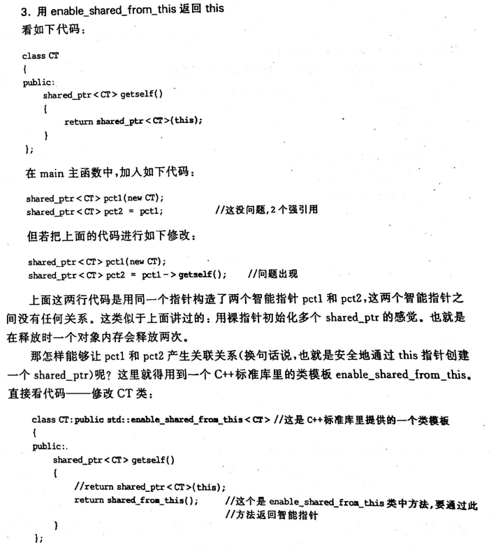
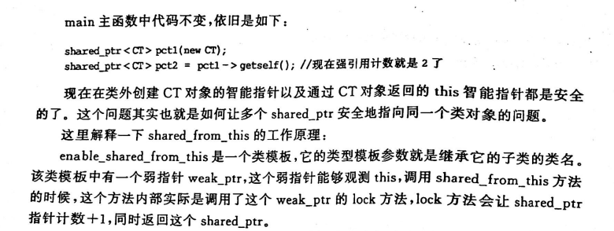
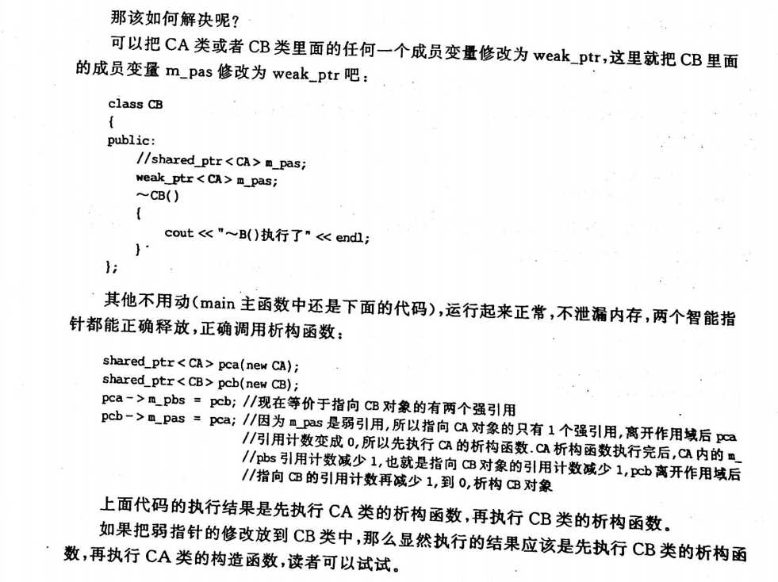
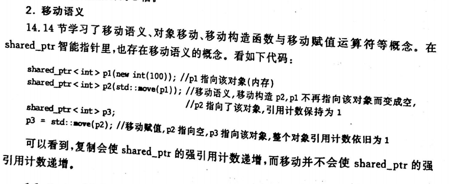
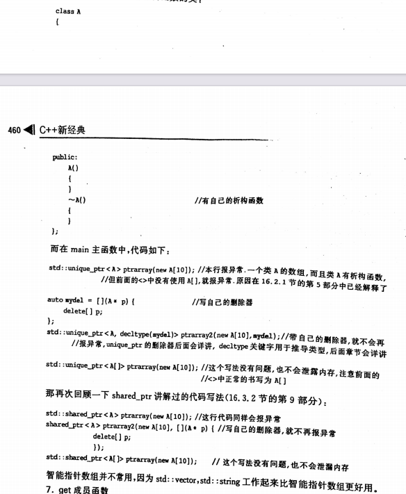
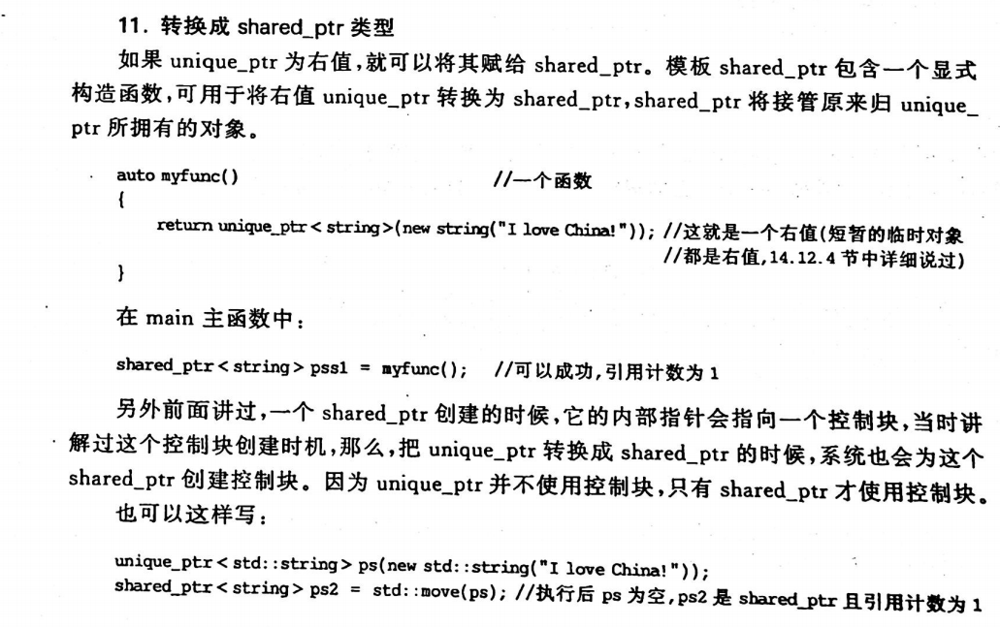
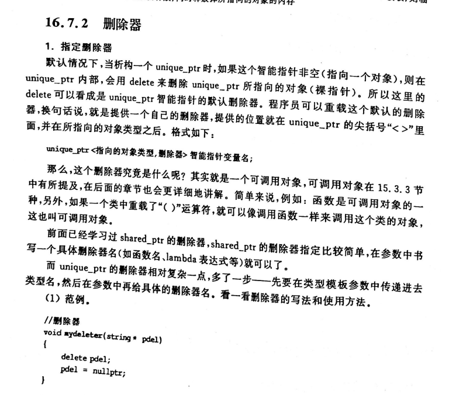
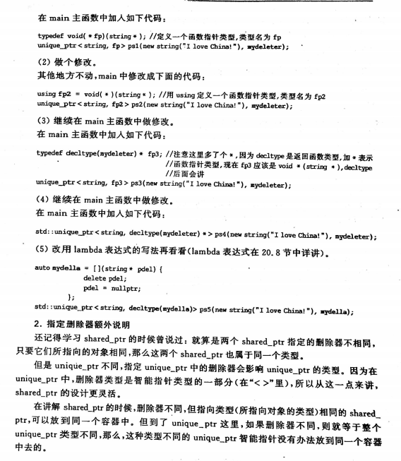
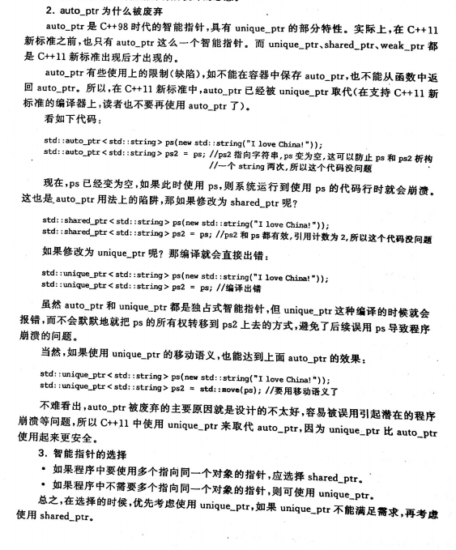
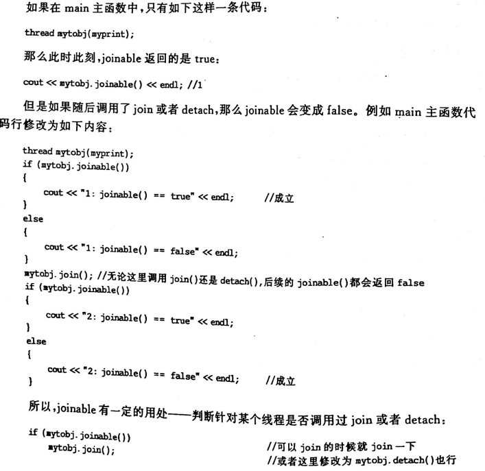

以下内容是自己近端时间复习C++时，对于一些知识点的简要记录，目的不是为了规范，只是让自己想到哪个点的时候能够回想起来，所以格式比较乱，目前会一直更新
1.字符
字符和字符串的问题 /0
2.字符串复制
str1 = "China";
str1 = str2;是违法的，得用strcpy
char str1[10] = "one123";这是定义的时候初始化，合法
str1 = "12312";这是赋值，非法
3.strcpy
strcpy复制后，有效值在第一个\0上
4.strcmp
strcmp一般用于比是否相等
先比asicll码，再比\0
不能这样比字符串
if(str1 == str2)因为是两个地址比较
得这样写if(strcmp(str1,str2) == 0)
5.strlen
strlen得到实际长度，不包括\0
每个汉字占两个字节
6.外部变量
C语言中函数只能返回一个值
全局变量得定义在使用之前
//extern int a; int func() { int b = a; return b; } int a = 1;
记得外部变量说明不能被初始化，外部变量说明可以多次声明
7.变量的划分方式
从作用域分：局部变量和全局变量
从生存期分：静态和动态
局部static 不能被其他函数引用，在静态存储区，编译时赋初值，没有的话默认为0
8.全局变量
全局变量的跨文件引用
有两个cpp文件
一个定义int a;
则在另一个cpp里面用他的话得在#include 这个下面加上extern int a;，一般写到这，毕竟引用完你下面才能用a
这样说明a已经在其他地方定义过了，不用再分内存给它
那如果我们不想让其他cpp引用全局变量的话
则static int a;这样的话，就算在另外一个文件extern int a;也会报错的，报无法解析外部符号的错误
并且这样写还有一个优点，就是你如果在两个cpp里面同时定义一个全局变量a，比如都有int a;这是编不过的
除非static int a，这就说明自己的源文件用自己定义的全局变量，互不影响
9.static
在函数之前用static，这个函数只能本文件使用
10.宏定义
10.1不带参数的
#define #undef 替换
#define PI 3.14 宏名一般用大写
字符串内的字符即使和宏名一样也不替换
10.2带参数
#define Sub(a,b) a-b
int result = Sub(3,2) 所以就为1
注意
#define PI 3.14
#define S(r) PIrr
result = S(1+5)
本意是3.1466，但实际是PI*1+5*1+5
所以加括号
#define S(r) PI*(r)*(r)
但注意宏名和带参数之间的括号不能有空格，也就是S和(r)之间不能有空格
如果有空格了就像#define S (r) PI*(r)*(r)
则代表S替换为(r) PI*(r)*(r)
10.3宏和函数的不用
函数调用是在运行到这个函数的时候才执行，涉及到分内存等，而宏是在编译阶段，并且它也不分配内存
宏的参数没有类型的说法，比如3.14，没有类型，不是说什么int还是double
宏展开只占用编译时间，不占用运行时间，而函数调用占用运行时间（分配内存，传递参数，执行函数体。返回值等）
宏还能替代比较复杂的
#define MAX(x, y) (x)>(y)?(x):(y)
int result = MAX(3,4);
还能替代多行语句。末尾的""用来代表下一行代码和本行代码本是同一行
#define MACROTEST do{\
printf("test\n"); \
} while(0);
11.文件包含
其中头文件一旦改动，就会把包含他的cpp都重新编译一下
因为本质上#include "test.h"是那文件替换，你把头文件动了，那他将来替换到其他cpp里面的源代码也是都动了，所以得重新编译
12.条件编译
一般情况下，在生成可执行文件的过程中，源程序文件中的所有代码都参加编译，但有时候希望对其中的一部分内容只在满足一定条件下才进行编译，也就是对一部分内容指定编译的条件，也有的时候，希望当满足某条件时对一组语句进行编译，而当条件不满足时编译另外一组语句，这都叫条件编译
条件编译用的比较频繁，尤其是写一些跨操作系统平台的代码，例如既在window也在linux编译运行，但程序中有些特殊的系统调用函数只能在window下编译 运行或者在linux下编译运行，此时就有必要使用条件编译了
有这几种形式
1)
#define DEBUG 1
这下面是在main里面
#ifdef DEBUG
程序段1
#else
程序段2
#endif
2)
#ifndef DEBUG
程序段1
#else
程序段2
#endif
3)
#define MYPI 1
#if DEBUG
程序段1
#else
程序段2
#endif
例子
#if _WIN32
prinf("是window平台");
#elif Linux
prinf("是linux平台");
#else
//其他平台
#endif
其中_WIN32，Linux这都会在各自的平台，系统自己定义，不用自己定义的
13.直接和间接访问
直接访问：直接通过变量名找到
间接访问：
int i =5;
mypoint = &i;
这个mypoint是用来存i的地址的，但是它本身在内存也有地址的，所以也是占内存的，一般在x86占4字节，在x64占8字节
这个mypoint成为指针变量，专门用来存另一个变量的地址
指针就是一个地址（地址用数字表示）
14.指针变量
指针变量是存其他变量地址的便阿玲，也叫该指针变量指向某某变量，如这里的mypoint指向i
变量的指针，就是变量的地址，变量mypoint中保存着变量i的地址，因此变量mypoint就是指向变量i的指针变量
指针变量在定义时，会在定义的语句中引入一个“*”，表示“这是一个指针变量”
int * a1;定义一个指针变量，这个指针变量指向整型变量，指针变量前面有个*，这个是和普通变量最明显的区别
现在要让一个指针变量指向一个整型变量，用赋值语句可以到
a1 = &i;
注意：定义指针变量时，前面有*，但是使用指针变量时，前面没有*，所以指针变量名是a1，而不是*a1
int * a1 = & i;这属于定义时候初始化，现在a1指向i
等价于
int * a1;
a1 = &i;
*这个指针运算符不用于定义变量指针的场合时，代表的是它所指向的变量
比如上面的
i = 10;
int * a1 = & i;
printf("%d", * a1); // 10 ，*a1代表i
再提一嘴
(*a1)++等同于i++
*a1++等同于*(a1++)
a1++是什么意思呢，我们知道a1就是存的i的地址，那让i的地址++，而由于i是个整型，所以a1++相当于a1要跳过4字节，所以a1不再指向i了，而是指向i后面的内存
那*(a1++) = 5是什么意思，首先这是将a1所指向的内容赋值为5(因为++是先用后加，所以此时相当于是*a1 = 5)，因为a1开始指向i变量，所以是让i变量的值为5；其次让a1自加1，也就是a1++,导致a1指向i后面的地址，如果i的起始地址是1000，那a1指向的地址现在为1004
指针变量做参数，可以间接在函数汇总改变指针变量所指向的变量的值，从而达到在被调用函数内改变外界变量值的效果
xvoid swap(int* pdest1, int* pdest2){ int temp; temp = *pdest1; *pdest1 = *pdest2; //*pdest1实际就是pdest1所指向的变量，也就是a *pdest2 = temp; //*pdest2实际就是pdest2所指向的变量，也就是b }
int main() { int a = 5, b = 6; int* p1, * p2; p1 = &a; p2 = &b; if (a < b) { swap(p1, p2); } cout << a << b; return 0; }记住有一个错误
int * p;
*p = 5
这是错的，因为p里面还没有存任何地址，也就是说他没有指向任何一个变量，那这个5往哪里存它都不知道
所以这样改就对了
int * p;
int a;
p = &a;
*p = 5;
这样p的内存里面存的就是a的地址了，*p也就是a了，也就是a=5
15.指向数组元素的指针
int a[2];
a[0] = 1; a[1] = 2;
int *p;
p = &a[0];//把a[0]元素的地址赋给指针变量p，即p指向数组第0号元素
因为数组名也就是数组首地址，所以
p = &a[0];和p = a;是一样的
定义指针变量时候也可以赋初值，这两行等价
int * p = &a[0];
int * p = a;
xxxxxxxxxxint a[2]a[0] = 1; a[1] = 2;int *p;p = &a[0];//引用一个数组元素，目前由于以下几种方法：a[i],p[i],*[p+i],*(a+i)
16.指针数组和数组指针
int * p[10]这是指针数组，首先这是个数组，数组里有10个元素，每个元素都是一个指针，每个元素里面是这样的int*
数组指针int (*p)[10] ，表明的是这个是个指向数组的指针，那么该指针变量存储的地址必须是数组的首地址，p是一个指针，指向一个int[10]的数组，每个数组元素是一个int类型的变量
数组指针和指针数组的区别 - hongcha_717 - 博客园 (cnblogs.com)
17.字符串
字符串表现形式可以用字符数组表示
char test1[] = "aaaa";
char test2[] = "aaaa";
这是两个内存
也可以用字符指针实现表示
const char * test1 = "aaaa";
const char * test2 = "aaaa";
这是两个指针，但aaaa只占一个内存空间
xxxxxxxxxx//这个例子难理解 char a[] = "aaaa"; char b[100]; char* c1, * c2; int i; c1 = a; c2 = b; for (;*c1 != '\0'; c1++, c2++) { *c2 = *c1; } *c2 = '\0'; cout << a << endl; cout << b << endl; return 0;18.字符指针变量和字符数组
char str[100] = "aaa";//定义时候初始化
这样写就不行
char str[100];
str = "aaa";
修改成这样才可以
strcpy(str, "aaa");
但像字符指针的操作是可以的
const char * a;
a = "aaa";
这是因为aaa是字符串常量，在内存中是有固定地址的，这行只是让字符指针a指向这个地址而已
指针变量的值是可以变的，也就是指针指向的位置可以发生改变，例如
const char*a = "I love China!";
a = a + 7; //原来指向字符“I“，这里跳过7字节，整好指向China
printf("%s",a);//China!
但是数组名虽然代表数组首地址，但是其值不能改变
char a[] = "I love China!";
a = a + 7; //这是错的，因为数组名代表的数组首地址是不能发生改变的
19.用函数指针调用函数
xxxxxxxxxxint max(int x, int y){ if(x > y) return x; return y;}
int main(){ int c; int (*p)(int x, int y); p = max; c = (*p)(5,19);//等价于c = max(5,19); cout << c ; //19}如果函数指针变量的定义写成了 int * p(int x, int y)，那就说明了：int *表示这个函数的返回值是指向整型变量的指针
上面这一大段代码，看p = max的地址时，发现不一样，其实p保存的才是函数真正的入口地址，VS只是会维护一张表，把max入口地址表保存到表格里，调用的时候才会去取
但是其实你如果输出max的话，就会看到真实地址了
20.指向指针的指针
char ** p 定义一个指向“字符串指针变量”的指针变量
21.指针数组作为main函数参数
int main(int argc, char * argv[]) 第二个参数是个指针数组
调试看，可以看到这个指针数组的长度是1，并且内容就是可执行文件的完整路径文件名
argc是个数字目前是1
有两种方法可以给argv传入参数


22.结构体指针
xxxxxxxxxxstruct student { string name; int age;};
int main(){ struct student stu; struct student* ps; ps = &stu; stu.name = "zyuh"; cout << (*ps).name << endl; ps->age = 10; 注意一个是->一个是.
}23.共用体
内存是最大的，不能同时定义所有的参数，他们的起始地址一样，可以相互覆盖，占用相同的内存，写的形式和结构体一样
24.枚举类型
枚举会根据定义的顺序给赋值，第一个是0等等
xxxxxxxxxxenum color{ Red, Blue};
enum color Mycolor;cout << Red //输出是0
//这样是错的enum color mycolor1mycolor1 = 1000;//但这样是对的mycolor1 = (enum color)1000;cout << mycolor1 //输出为1000，说明枚举值和整型是互通的25.typedef
typedef是定义新的类型名而不是用来定义变量的
typedef int AAA;相当于AAA就是int
AAA a,b,c定义了三个int型变量
也可以来定义结构体
typedef struct date{
int data;
}BBB;
BBB birthday;定义了一个结构体
BBB * p这是一个指向结构体类型的指针
typedef int NUM[100] // 定义NUM为整型数据类型
NUM n; // 定义n为整型数组变量，原来要这样定义int n[100];
typedef char * CCC;
CCC p,q;//之前的话要这样定义 char * p,q
xxxxxxxxxx总结一下怎么用typedef1）写出常规的整型变量定义方法int n[100];2)将变量名n替换成自己想用的类型名int NUM[100];3)在前面加上typedeftypedef int NUM[100];3)这三步完成后就可以用typedef定义变量了NUM n;
注意事项：习惯把typedef定义的名字写成大写，以辨识与C语言本身的int，char等的区别typedef是定义新的类型名而不是用来定义变量的typedef是编译时处理的
编译阶段：预处理：#define #include # ifdef编译：词法和语法的分析，目标代码的生成，优化typedef汇编：产生.o(.obj)目标文件26.fgetc
fgetc的缺点，如果文本里真有一个-1的话，就会提前结束，所以用feof替代，这是看文件当前位置的指针是否指到文件末尾
27.文件操作
xxxxxxxxxxFILE* fp = fopen("config.txt", "r"); if (!fp) { printf("文件打开失败\n"); } else { char LineBuf[1024]; while (!feof(fp)) { LineBuf[0] = 0; if (fgets(LineBuf, sizeof(LineBuf) - 1, fp) == NULL) { continue; }if (LineBuf[0] == '\0') { continue; } lblprocstring: if (strlen(LineBuf) > 0) { if (LineBuf[strlen(LineBuf) - 1] == 10 || LineBuf[strlen(LineBuf) - 1] == 13) { LineBuf[strlen(LineBuf) - 1] = 0; goto lblprocstring; } } if (strlen(LineBuf) <= 0) { continue; } printf("%s\n", LineBuf); } fclose(fp); }28.保存到文件中的结构体，字节对齐
对于要保存到文件中的结构体，结构体成员中不要出现指针类型成员变量，因为它所指向的内存地址很可能失效，一旦引用了失效的地址会导致程序运行崩溃
xxxxxxxxxxstruct stu { char name[30]; int age; double score;};字节对齐这个问题和编译器有关，像这个结构体，有30+4+8=42个字节，但是在window上用VS的话你看他长度的话是48字节，因为window自动搞成8的整数倍，linux用gcc则是4的整数倍，你再linux上看他是44字节
如果把 这个结构体写入一个文件中，那在window生成后是48字节，再去linux打开时读出来是44字节，显然读出来的数据肯定出错，解决的办法是，定义结构体之前就用"#pragma pack(1)"设置结构体对齐方式是1字节对齐，按1字节对齐的意思就是告诉编译器不要去对齐，实际是多少字节就是多少字节，如果想要恢复默认的字节对齐方式，在定义结构体之后，可以使用"#pragma pack()"取消刚才的设置的对齐，这样不管是什么操作系统，读这个结构体都是42字节
修改后就是这样子
xxxxxxxxxxstruct stu { char name[30]; int age; double score;};29.w,r,wb,rb的区别
如果想要文件原封不动的一样，就用加b的
30.上面全是C语言的,下面则开始进入C++
31.C++文件的后缀名
不同后缀名是因为不同的编译器，.c .cpp .cc .cxx
.hpp是把定义和实现放在一个文件里，有效的减少编译的次数
32.<<结合问题
int i =3;
cout << i-- << i-- //输出是23 先用右边的
<<到底是左结合还是右结合，和编译器有关，不同的编译器结果不同，所以避免一行代码多次改变一个变量的值
33.int赋值
int a =3
可以写成int a{3}
这样写的好处在哪里呢
int abc = 3.5f编译时候没问题，但执行会发现，3.5的小数部分被截断，所以abc的值是3
int abc{3.5f}，就会在编译时都报错，提前拦截可能的误截断
当然int abc(123)也一样
34.auto
auto自动类型推断发生在编译期，所以使用auto不会造成程序运行时的效率降低
35.头文件防卫式声明
头文件he34.ad.h有个定义是 int a = 8;
头文件head2.h有个定义是 int b = 5;
主源文件cpp需要用到这两个变量
#include "head.h"
#include "head2.h"
int main
{
cout << a << endl;
cout << b << endl;
}
现在这个代码没问题
但是因为一些原因head2.h里面需要包含head.h，所以现在head2.h内容是
#include "head.h"
int b = 5;
这时候编译就会出错了，重定义错误，这是因为现在源文件里面有这个内容：
#include "head.h"
#include "head2.h"
展开后就是
int a = 8;
int a = 8;
int b = 5;
a被定义了两次，所以重定义错误
并且像这样的也会重定义错误
#include "head.h"
#include "head.h"
怎么解决呢？
首先改造head.h
#ifndef __HEAD__
#define __HEAD__
int a = 8;
#endif
再改造head2.h
#ifdef __HEAD2__
#define __HEAD2__
#include "head.h"
int b = 5;
说明下，每一个头文件的ifndef后面的定义名字都不一样，不能重名
好了现在修改后编译可以运行了
因为用了#ifndef #define #endif的组合，避免了头文件中的内容被多次#include
例如当head.h第一次被#include到cpp里时，#ifndef __HEAD__成立，所以下面的两行代码被#include到cpp里面
#define __HEAD__
int a = 8;
但是假如第二次再head.h被#include到cpp里面，#ifndef __HEAD__条件不成立，因为现在前面已经有了#define __HEAD__，所以这个head.h的内容不被#include到cpp里面，也就避免了重定义错误
所以写头文件的时候，要习惯性在文件头部添加#ifndef #define，在文件末尾添加#endif，这也就是头文件防卫式声明
36.引用
引用是为变量起得别名，定义引用不占用内存
int a = 3;
int& b = a;
b = 5;
这是对的
但是像这种是错的
int& aaa;
int& bbb = 10;
因为定义引用时，必须进行初始化
int a = 3;
int &b = a;//引用，是&在=左边
int * p = &a;//取地址符，&在=右边
在看引用作为形参
xxxxxxxxxxvoid func(int &ta, int &tb){ ta = 4; tb = 5;}int main(){ int a = 13; int b =14; func(a, b); cout << a << " " << b << std::endl; return 0;}37.const和constexpr
38.避免数据的复制
int v[]{12, 13, 14, 15}
for(auto x : v)
{
cout << x << endl;
}
相当于把v里每个元素都复制到x中
那怎么修改呢
for(auto &x : v)只用修改成这样，用引用的方式，就可以避免数据的复制
一般说，一个容器只要内部支持begin和end成员函数用于返回一个迭代器，能够指向容器的第一个元素和末端元素的后面，这个容器就可以支持范围for语句
39.C和C++的内存分配
前者3个，后者5个
40.malloc
malloc一般形式是
void * malloc(int NumBytes)
看下面范例
int * p = NULL;
p = (int *)malloc(10 * sizeof(int));
if(p != NULL)
{
*p = 5; //其实只用到了申请40字节的4个字节
cout << *p <
free(p);
}
new/delete比malloc/free做了更多的工作，所以在C++中用new和delete
41.指针的初始化
对于指针的初始化，能用nullptr的全部用nullptr
cout << typeid(NULL).name() << endl; //int
cout << typeid(nullptr).name() << endl; //std::nullptr_t
42.struct
xxxxxxxxxxstruct student{ private: int number; void func() { number++; }}
student stu1;stu1.number = 1001 //不可以引用//不可以通过对象名引用结构或类的成员，否则编译时报错//但是在成员函数func中还是可以直接引用number的，因为成员函数可以直接访问成员变量而不管成员变量是否为private结构体中默认是public，类中则是private，他们的继承也是
43.C++中更习惯使用引用类型的形参来取代指针类型的形参
44.函数重载
void func1(const int i){}
void func(int i) {}
这样的重载不可以，因为const关键词在比较同名函数时会被忽略，这两个函数相当于参数类型和数量完全一样，所以函数重载不成立，编译链接时会报错
45.const char * 和 char const * 和 char * const 三者的区别
都知道char ，那么const分别在char之前，在char和之间，和*之后
难点，没看懂，在P241页
46.函数形参中带const
void func(const student &stu)
{
stu.num = 1010//这就是错误的，不能修改stu的内容
}
void func(cosnt int i) //实参可以是正常的int，形参可以用const int接，这没问题
{
int i = 100; //这也不行，不能给常量赋值
}
把形参写成const的好处
1.可以防止无意中修改了形参值导致实参值被无意中修改掉
2.实参类型可以更加灵活
就像上面那个，实参可以是正常的int，形参可以用const int接，这没问题
形参可以接受多样化的实参类型
在看void func2(int &a){}
func2(123)这是不可以的，必须传递进去一个变量
但是void func2(const int &a){}
func2(123)这样就没问题了，可以传递进去一个常量了
47.字符串相关
void func(const student &stu
{
stu.num = 1010//这就是错误的，不能修改stu的内容
}
void func(cosnt int i) //实参可以是正常的int，形参可以用const int接，这没问题
{
int i = 100; //这也不行，不能给常量赋值
}
把形参写成const的好处
1.可以防止无意中修改了形参值导致实参值被无意中修改掉
2.实参类型可以更加灵活
就像上面那个，实参可以是正常的int，形参可以用const int接，这没问题
形参可以接受多样化的实参类型
在看void func2(int &a){}
func2(123)这是不可以的，必须传递进去一个变量
但是void func2(const int &a){}
func2(123)这样就没问题了，可以传递进去一个常量了
string s1 = "abc";
string s2 = "def";
string s3 = "sfa"+"asdf"; //这就不行
string s3 = "sfa"+s1+"asdf"; //这就可以，中间夹杂一个string对象，因为饮食类型转换，把两个字符串转为string类型
这行相当于是sfa和s1相加后，生成一个临时的string对象，然后再跟asdf相加，再生成临时对象，然后复制给s3
48.vector
vector vjihe3; //语法错误，因为vector不能用来装引用，引用只是一个别名而不是对象
xxxxxxxxxxvector<int> a{ 1,2,3,4,5 }; for (auto& aaa : a) { aaa = 2; } for (auto& aaa : a) cout << aaa << endl;注意不要在for循环内改变vector的容量，增加删除元素都是不可以
49.迭代器
迭代器可以理解成用来指向容器中的某个元素的，有点像指针
vector iv = {100, 200, 300}; //定义一个容器
vector::iterator iter; //定义迭代器，也必须是vector开头
iterator是什么，它是每个容器（如vector）里面都定义了的一个成员（类型名），这个名字是固定的，请记住
每一种容器，如vector，都绑定了一个叫做begin的成员函数和一个叫end的成员函数
这两个成员函数用来返回迭代器的类型
iter = iv.begin();
iter = iv.end();//end返回的迭代器指向的并不是最后一个元素，而是末端元素的后面，这个后面怎么理解呢，就是end()指向的是一个不存在的元素
end起到了一个岗哨的作用，当从begin开始走，当begin走到end的位置时候，说明遍历完所有元素了
反向迭代器，rbegin，rend
迭代器中的iter++和++iter是同样的功能，让迭代器指向容器中的下一个元素，但是如果已经指向了end，就不能再++了，否则运行报错
--iter和iter--是一样的道理
xxxxxxxxxxstruct student{ int num;};vector<student> sv;student mystu;mystu.num = 100;sv.push_back(mystu);//把对象mystu复制给了sv容器中mystu.num = 200;vector<student>iterator iter;iter = sv.begin();cout<<(*iter).num << endl; //100,注意引用方法，*iter是一个结构变量，所以用“.”成员来引用成员cout <<iter->num <<endl;//100,iter想成一个指针，所以用->引用成员
每个容器除了iterator这种迭代器类型，还有另一种迭代器类型叫做const_iterator，这里不能改的意思是，迭代器指向的元素不能改变，而不是迭代器不能变，迭代器还是可以不断指向容器中其他元素的，所以只能读元素，不能改元素，有点像常量指针，而iterator可以读也可以写
如果容器对象是一个常量，那么就必须用const_iterator否则报错
cbegin,cend成员函数，返回的是都是常量迭代器const_iterator;
xxxxxxxxxxvector<int> iv = { 1,2,3,4,5 }; vector<int>::const_iterator it; for (it = iv.cbegin(); it != iv.cend(); ++it) { *it = 888; //错误，不能给常量赋值，这说明cbegin返回的是常量迭代器 cout << *it << endl; }
迭代器失效
如果在for循环里面插入元素到容器的话，那就必须跳出循环体，不能再继续用这些迭代器操作容器
xxxxxxxxxxfor (auto beg = iv.begin(), end = iv.end(); beg != end; ++beg){ iv.push_back(88); break; //立刻跳出循环，这里的beg，end都不能再使用，以免出问题，后续重新用循环重新拿begin和end使用}//重新定位迭代器for (auto beg = iv.begin(), end = iv.end(); beg != end; ++beg){ //....}
如果有需求想不断的插入多条数据，还想让迭代器不失效

50.四种C++风格的强制类型转换
51.访问类的成员
类的话，如果用类的对象访问，就使用对象名.成员名 来访问成员
如果用指向这个对象的指针来访问，就使用指针名->成员名 来访问成员
xxxxxxxxxxstruct student{ int a; char name[100]; void func() {};};
student stu;stu.a = 100;stycpy_s(stu.name, sizeof(stu.name), "zhangsan");
student * pstu = & stu;pstu->a = 10000;类中public修饰的成员就是类的访问接口，供外界调用
private实现各种功能的细节方法，但不暴露给外界（使用者），使用者无法使用这些private成员
struct默认是public，class则是private
52.类声明
类定义放在一个头文件中，而多个cpp文件中都包含这个头文件，那不就相当于这个类定义了多次吗？我们知道一个变量不允许定义多次，一个类难道允许定义多次？这个确实允许的，类是特殊的存在，这一点与定义一个全局变量不同，所以很多人也把类定义称为类声明
53.构造函数的参数
1.构造函数的默认参数，也就是Time(int a, int b = 10)，所以b就是默认参数
在具有多个参数时，默认参数都必须在非默认参数的右边，一旦为某个参数指定默认值，则它后面的参数也必须指定默认值
所以可以直接这样调用 Time myTime{12}，也就是a为12
这时候不能再有这样的构造函数Time(int a)，因为系统不知道你是要哪个
2.单参数构造函数的话，总结一下
Time mytime = {16}; 这种写法一般认为是正常的，带一个参数16，可以让系统明确调用带一个参数的构造函数
Time mytime1 = 16; 这就存在临时对象或者隐式转换的问题，因为这相当于调用单参数构造函数，生成一个临时对象，把临时对象的值，赋值到了mytime1的成员变量里
void func(Time myt)
{
return
}
func(16),这也存在临时对象或者隐式转换的问题
用explicit（显式）就可以强制系统明确要求不能做隐式转换
比如把构造函数都加上后，像这种explicit Time(int hour, int min, int sec);
此时Time mytime2 = {12, 13, 14）报错
而Time mytime3 {12, 13, 14)没有报错，能成功创建对象
这说明一个问题：有了这个等号，就变成了一个隐式初始化（其实是构造并初始化），省略这个等号，变成了显式初始化（也叫作直接初始化）
那这样怎么改上面那三个的代码呢
Time mytime = {16};
Time mytime1 = 16;
func(16)
这样改：
Time mytime = Time(16); //或者Time{16}
func(Time(16)); //临时构造一个对象
总结：一般来说，单参数的构造函数都声明为explicit，除非有特别原因
构造初始化列表
Time::Time(int temphour, int tmpmin, int tmpsec)
:Hour(tmphour), Minute(tmpmin)
尽量不要某个成员变量依赖另一个，比如
Time::Time(int temphour, int tmpmin, int tmpsec)
:Hour(tmphour), Minute(Hour)
因为赋值顺序不是按照这个左右，而是按照成员变量在类的定义顺序
54.类的定义中实现的成员函数定义
直接在类的定义中实现的成员函数定义，会被当做inline内联函数来处理，但毕竟这只是对编译器的建议，能不能内联成功，取决于编译器，所以成员函数定义体尽量写的简单一些，增加被内联的概率
55.常量成员函数
对于成员函数的声明和实现代码分开的情况下，要记得再成员函数的声明中增加const，也在实现中增加const，都是在成员函数末尾加
加的作用是告诉系统，这个成员函数不会修改该对象里面的任何成员变量的值，也就是这个成员函数不会改变这个对象的状态
这种也叫作常量成员函数
xxxxxxxxxxvoid noone() const{ Hour += 10; //错误，成员函数不可以修改成员变量的值}
const Time abc;abc.addhour(12); //错误，因为addhour成员函数不是const，只能被非cosnt对象调用abc.noone();//正确，因为noone是const
Time def;def.noone();//const成员函数，可以被非const和const对象对象，也就是万人迷，而非const成员函数只能被非const对象调用普通函数（非成员函数）末尾不能加const，编译都通不过，因为const在函数末尾的意思是，成员函数不会修改对象里面任何成员变量值，而普通函数没有对象这个概念
56.mutable
mutable翻译成中文，是不稳定的，容易改变的意思，与const反着来，而且mutable的引入也是为了突破const的限制
假如咱们写的const成员函数，需要修改成员变量的值，那怎么办，删掉const吗，那这样的话，cosnt对象就不能再调用这个非const成员函数了，所以引入了mutable来修饰一个成员变量，表示这个变量永远处在可变状态，即使在const结尾修饰的成员函数中
xxxxxxxxxxmutable int myHour;
void noone() const{ myHour += 3; //现在就可以修改了}57.static在类里面的作用
static在类里面的作用,定义的变量和函数，是属于类的，而不是属于某个对象的，并且在定义的函数中，与对象有关的成员变量不能出现在它定义的函数中，声明的时候用static，定义的话不用加
58.使用类的构造函数初始化列表或在构造函数中给Second值，该值会覆盖掉初始值
例如在类里面已经定义了int Second = 0;
构造函数是这样的
xxxxxxxxxxTime::Time(int tmphour, int tmpmin, int tmpsec) :Second(tmpsec) //通过初始化列表来给Second值或者{ Second = tmpsec; //通过赋值来给Second值 }59.cosnt成员变量的初始化
对于类的const成员，只能使用初始化列表来初始化，而不能在构造函数内部进行赋值操作
比如在类声明里面，有const int testvalue //当然这里可以给初值，比如const int testvalue = 19;
那么在构造函数定义中，代码应该如下
xxxxxxxxxxTime::Time(int tmphour, int tmpmin, int tmpsec):Hour(tmphour), Minute(tmpmin), testvalue(18){testvalue = 6; //不可以在这里初始化testvalue}
上面创建爱你testvalue这种常量属性的变量时，Time构造函数完成初始化以后，也就是Time::Time(int tmphour, int tmpmin, int tmpsec)
:Hour(tmphour), Minute(tmpmin), testvalue(18)执行完后，testvalue才真正具备了const属性，在构造testvalue这个const变量（对象）过程中，Time构造函数可以向其内部写值，如上面的testvalue(18)，因为构造函数要进行很多看得见和看不见的写值操作，所以构造函数不能声明为const的
一旦程序员书写了自己的构造函数，那么在创建对象的时候，必须提供与其书写的构造函数形参相符合的实参，才能成功创建对象
14.4.4 默认构造函数这个没看懂，需要重新看
60.=default
C++11新特性，=default一般用在默认构造函数中，里面不能有参数 相当于实现了一个函数体{}，如果在头文件写，相当于内联，如果不在头文件写，而在cpp里面写，则不是内联了
=delete，显式禁用某个函数，C++11中=delete的巧妙用法= delete爱就是恒久忍耐的博客-CSDN博客
61.构造和析构函数参数的情况
一般来说，拷贝构造函数的第一个参数是带const的，当然这不是绝对的
单参数的构造函数，一般声明为explicit，以防止代码模糊不清的问题
拷贝构造函数，一般都不声明为explicit
析构函数不允许有参数存在，一般自己写析构的话，是构造函数里面new了内存，所以析构要及时释放出来
62.成员变量初始化
对于类类型成员变量的初始化，能放在构造函数的初始化列表里进行的，千万不要放在构造函数的函数体来进行，这样可以节省很多次不必要的成员函数调用，从而提高不少程序的执行效率
对象中的成员变量不是在析构函数的函数体里面销毁的，而是函数体执行完毕后由系统隐含销毁的
成员变量初始化的时候是在类中先定义的成员变量先进行初始化，销毁的时候是先定义的成员变量后销毁
63.父类和子类的函数
先执行父类构造函数，再执行子类构造函数
父类中的private成员不受继承方式的影响，子类永远无法访问
对于父类来说，尤其是父类的成员函数，如果不想让外面访问，就设置为private，如果想让自己的子类能够访问，就设置为protected，入股偶像公开，就设置为public
63.函数遮蔽
函数遮蔽：正常情况下，父类的成员函数只要是用public或者protected修饰的，子类只要不采用private继承方式来继承父类，那么子类中都可以调用，但是在类继承中，只要子类的函数和父类的函数有同名，那无论参数和类型，子类的这个函数都会遮蔽掉父类的同名函数，完全无法调用父类的同名函数了
当然也有方法可以调用父类的，只不过类是这样： 父类：：成员函数名（---）的方式来调用
也可以让using的方式，比如在子类的.h种这样写 using 父类：：函数，换句话说就是让父类的同名函数在子类中以重载的方式使用，这个点还比较复杂，可以看那306页
64.父类指针
父类指针new一个子类对象 是可以的，但反过来不行
比如Human * phuman2 = new Men;这是可以的
父类指针很强大， 不仅可以指向父类对象，也可以指向子类对象
但是父类指针没办法调用子类的成员函数
65.override
C++11中，可以在函数声明所在行的末尾增加一个override关键字，这个关键字是用在子类中，而且是虚函数专用的
virtual void eat() override;
如果不用父类类型指针，而是用普通对象来调用虚函数，那虚函数的作用就体现不出来了，因为这就不需要运行时（根据new的是哪个类的对象）决定绑定哪个函数，而是在编译时候就能确定的
66.多态性
多态性只是针对虚函数说的，非虚函数，不存在多态的说法

67.虚函数
纯虚函数是在父类中声明的虚函数，它在父类中没有函数体，只有声明，要求任何子类都要定义该虚函数自己的实现方法
含有纯虚函数的类不允许创建对象，比如Human human;是错误的，这种类叫做抽象类，他们不能用来生成对象，主要目的是为了统一管理子类（或者说建立一套供子类参照的标准或规范）
抽象类中的虚函数不写函数体，而是推迟到子类中去写
抽象类主要是用来做父类，把一些公共接口写成纯虚函数，这些纯虚函数相当于一些规范，所有继承的子类都要实现这些规范（重写这些纯虚函数）
其实压根不需要抽象类（父类），直接子类实现自己的eat接口不就好了，但是如果这样的话，怎么实现多态呢？多态的实现是：父类指针指向子类对象，如果没有父类，也就不存在多态
68.父类析构函数为虚函数
用父类指针new一个子类对象，在delete的时候系统不会调用子类的析构函数，这肯定是有问题的
xxxxxxxxxxHuman * phuman = 解决方法就是，把父类Human的析构函数声明为虚函数即可

69.不能将“this”指针从“const XXX”转为“XXX &”
如果报不能将不能将“this”指针从“const XXX”转为“XXX &”， 出现上述错误的原因是在const成员函数中调用了非const成员函数，因此只要将所调用的函数都改成const函数
69.友元函数
70.RTTI
71.不想当基类的类
72.静态类型和动态类型
只有基类指针或者引用才存在这种静态类型和动态类型不一致的情况，如果不是积累的指针或者引用，那么静态类型和动态类型永远应该是一致的 P329
73.派生类为一个基类对象初始化或者赋值
用派生类对象为一个基类对象初始化或者赋值时，只有该派生类对象的基类部分会被复制或者赋值，派生类部分将被忽略掉
74.左值和右值
i = i + 1;
所以一个左值可能同时具有做左值和右值的属性，但是不可能是同时是左值或者右值,只能说具有这种属性
75.左值引用和右值引用
左值引用
const & a = 1;
等价于
int b = 1; //可以把b看作一个临时变量
const &c = b;
右值引用是&&，一般用在即将销毁的/临时对象上
例如int && a = 3;
----左值和右值表达式
++i是左值表达式
i++是右值表达式
----右值绑定
所有的变量都要堪称左值，因为他们是有地址的，而且用右值绑定也绑定不上
任何函数里面的形参都是左值，就算是void f(int &&w)这种写法，这里形参w的类型是右值引用（需要绑定到右值），但w本身是左值
临时对象都是右值
----为什么要用右值
为啥用右值呢，它是C++11新加的，可以把它看作一个新的数据类型，主要目的是为了提高效率，怎么实现呢，就是把复制对象变成移动对象，比如之前对象A给对象B的话，是先给B开内存，然后再把A的每个成员赋值给B，这种非常慢，而移动对象是把A的内存块直接给B，然后A去释放，就这样就完事了，之前复制对象的话，有拷贝构造函数，拷贝复制运算符，而移动对象有，移动构造函数和移动复制运算符，只不过前面两个是&，后面两个是&&
76.std::move函数
因为move太容易重名了，所以使用时候都带上std::move，不管写没写using namspace std;
string def = std::move(st)是触发了string类的移动构造函数，而对于string && def = std::move(st）并没有触发string类的移动构造函数
77.隐式类型转换
xxxxxxxxxxCTempValue sum;sum = 1000;和CTempValue sum = 100后者比前者少调用了一次构造函数，一次拷贝赋值运算符，少调用了一次析构函数后者的=不是赋值运算符，而是“定义时初始化”的概念，这个代码的过程是，在这里定义了sum对象----系统为sum对象创建了预留空间，然后用1000调用构造函数来构造临时对象，但是这个构造是在预留空间里进行的，所以并没有真正的产生临时对象C++只会为const引用(const string& aaa)产生临时对象,而不会为非const引用string& aaa产生临时对象
void test(const string& aaa)
临时对象就是一种右值
P347页可以好好看看
78.一般一个函数只要返回一个对象，一般都会产生临时对象
xxxxxxxxxxCTempValue Double(CTempValue & ts){ CTempValue tmpm; tmpm.val1 = ts.val1 * 2; tmpm.val2 = ts.val2 * 2; return tmpm;}优化后的代码应该是这样的CTempValue Double(CTempValue & ts){ return CTempValue(ts.val1 * 2, ts.val2 * 2);}这样少了一次拷贝构造和一次析构14.14再好好看看
79.引用静态变量的方式
对象名引用静态变量用小数点
test.a
类引用的话，是冒号
Test::a
80.多重继承
多重继承的话，构造函数的顺序，是按照继承时候写的顺序来
能用单一继承的问题不用多重继承
class A : virtual public Grand(---)虚继承，作用是不让派生类拥有多个基类的部分，其中virtual和public可以互换位置
一旦Grand成为虚基类后，Grand类的初始化工作就不会再由它的直接子类A，A2来初始化了，而是最下层的来初始化
81.类型转换构造函数
类型转换构造函数，把别的转为这个类的类型
xxxxxxxxxxclass TestInt{ public: TestInt(int x = 0) : m_i(x) { if(m_i < 0) m_i = 0; if(m_i > 100) m_i = 100; } public: int m_i;}在main主函数中，加入如下代码TestInt ti = 12;//隐式类型转换，将数字转化为TestInt对象（调用类型转换构造函数）TestInt ti2(22);//调用类型转换构造函数，但这个不是隐式类型转换如果不希望发生隐式类型转换，可以增加explicit，这是禁止隐式转换explicit TestInt(int x = 0) : m_i(x)既然用了禁止隐式，则代码也要改改TestInt ti = TestInt(12);
接下来是类型转换运算符，可以当作是类的一个成员函数，把类转为别的类型public: operator int () const { return m_i;//返回的就是一个int类型，可以把该类对象转换为int类型 }在main主函数中，写这个ti2 = 6;int k = ti2 + 5; k=11，这里调用operator int()将ti2转为int，结果为6，在和5做加法，结果给kint k2 - ti2.operator int() + 5;.//也可以显式调用，注意写法，没有形参，所以括号内为空
无论把其他类型转为类类型，还是反过去转换，尽量都少用，因为代码难读懂，并且有二义性，二义性就是怎么样都行，所以编译器不知道怎么做了
例如
xxxxxxxxxxoperator int() {}operator double() {}此时在main主函数中TestInt aa;int abc = aa + 12; //会产生二义性错误82.类成员指针
1.对于普通成员函数
定义普通成员函数指针： 类名::*函数指针变量名字
获取类成员函数地址： &类名::成员函数名
xxxxxxxxxxclass Test{ public: void myfunc(int temp) { };}在main主函数中void (Test:: *pfunc)(int); //类成员函数指针变量的定义，变量名字是pfuncpfunc = &Test::myfunc; //类成员函数指针变量被赋值对于类对象调用成员函数： 类对象名.*函数指针变量名字
对于类对象指针调用成员函数： 指针名->*函数指针变量名字
例如
xxxxxxxxxxCT ct, *pct;pct = &ct;(ct.*pfunc)(100);(pct->*pfunc)(200);2.对于虚成员函数
和普通成员函数调用方法一样，只不过这个指针指向的是虚函数地址，因为类中有虚函数，会产生一个虚函数表
3.对于静态成员函数
声明静态成员函数指针： *函数指针变量名
获取类成员函数地址： &类名::成员函数名
因为静态成员是跟着类走的，所以在类里相当于是全局的，所以不用再用类名：：来限定作用域
xxxxxxxxxxvoid (* myfpointstatic)(int) = &CT::staticfunc; //定义一个静态的类成员函数指针并给初值myfpointstatic(100); //直接使用静态成员函数指针名即可调用静态成员函数83.类成员变量指针
1.对于普通成员变量
xxxxxxxxxxpublic: int m_a;在main主函数中int CT::*mp = &CT::m_a;跟踪调试发现这个指针并不是真正意义的指针，他不是指向内存的地址，而是这个成员变量和该类对象首地址之间的偏移量
2.对于静态成员变量
则是一个真正的地址，当然也不用加CT这个类作用域
84.函数模板
xxxxxxxxxx第一种template<typename T> //这T是类型参数
第二种看看非类型参数怎么用template<int a, int b>int func(){ int add = a + b; return add;}在main中int result = func<1, 2>;
第三种template<typename T, int a, int b>int func(T c){ int add = (int)c + a + b; return add;}在main中int result = func<int, 11, 12>(13) 13是实参，int是类型参数13和int对应，所以就传进去了，如果不是13，而是13.3，那会以<>里面的为准，而不是13
第四种，感觉没见过，所以先不写了85.类模板
类模板的所有信息，不管是声明还是实现等内容，必须全部写到一个头文件里，因为实例化具体类的时候，需要知道类的所有信息
记住vector才是一个完整的类型
xxxxxxxxxx
template<typename T>class myvector{public: typedef T* myiterator;
public: myvector(); myvector& operator = (const myvector&);
public: myiterator mybegin(); myiterator myend();
public: void myfunc();};
template<typename T>void myvector<T>::myfunc(){
}
template<typename T>myvector<T>::myvector(){
}在类模板内部，可以直接使用类模板名，而不需要在类模板名后跟模板参数，因为在类模板定义内部，如果没提供类模板参数，编译器会假定类模板名带与不带模板参数等价，也就是myvector等价于myvector
当然非要在后面跟模板参数也行
myvector&operator=(const myvector&)
但是假如在类模板定义外实现这个运算符重载，则需要这样写，需要加上模板参数T，这种写法是套路，记住就行
template
myvector& myvector::operator = (const myvector&)
{
return *this;
}
使用非类型的模板参数
xxxxxxxxxxtemplate<typename T, int size = 10>class myarray{private: T arr[size];
public: void myfunc();};
template<typename T, int size>void myarray<T, size>::myfunc(){ std::cout << size << std::endl; return;}但这种一般有参数限制，例如浮点型一般不能做非类型模板参数
例如这个就不行
xxxxxxxxxxtempalte<typename T, double size>class myarray{---};类类型也不能做非类型模板参数，例如
xxxxxxxxxxclass a{ };template<typenmae T, a Size>class myarray{---};86.typenmae的场合
1.在模板定义里，表明其后的模板参数是类型参数
xxxxxxxxxxtemplate<typename T, int a, int b>int funcaddv2(T c){---}2.2.用typename标明这是一个类型（类型成员），这个我没看懂，不太明白，但好像也没怎么见过，所以先放着
87.函数指针作为其他函数的形参
xxxxxxxxxxint mf(int tmp1, int tmp2){ return 1;}
typedef int(*FunType)(int, int);
void testfunc(int i, int j, FunType funcpoint){ //可以通过函数指针调用函数 int result = funcpoint(i, j); cout << result << endl;}
int main(){ testfunc(3, 4, mf);
return 0;}其中typedef定义函数指针
xxxxxxxxxxtypedef int (*FunType)(int,int);88.函数模板趣味用法举例
可以推断出对象，这里用到了可调用对象的概念
xxxxxxxxxxint mf(int tmp1, int tmp2){ return 1;}
typedef int(*FunType)(int, int);
template<typename T, typename F>void testfunc(const T& i, const T& j, F funcpoint){ cout << funcpoint(i, j) << endl;}
class tc{public: tc() { cout << "构造函数" << endl; } tc(const tc& t) { cout << "拷贝构造函数执行" << endl; } // 重载圆括号 int operator()(int v1, int v2) const { return v1 + v2; }};
int main(){ tc tcobj; testfunc(3, 4, tcobj);//这里只调用拷贝构造函数 return 0;}执行了一次tc的构造函数和重载圆括号
89.默认模板参数
函数参数有默认值，模板参数也可以有默认值
xxxxxxxxxxtemplate<typename T = string, int size = 5>class myarray {---};调用的话myarray<> abc;上面是类模板
下面看看函数模板
现在有这个需求
希望用这个调用方式testfunc(3,4);就可以调用函数模板testfunc，也就是说，最后一个模板参数并没有提供
xxxxxxxxxxtemplate<typename T, typename F = tc>void testfunc(const T&i, const T&i, F funcpoint = F()){ cout << funcpoint(i, j) << endl;}这就等价于
xxxxxxxxxxvoid testfunc(const int&i, const int&j, tc funcpoint = tc()){ cout << funcpoint(i, j) << endl; }90.成员函数模板
不论是一个普通的类，还是一个类模板，他成员函数本身可以是一个函数模板，这种成员函数称为“成员函数模板”，但是这种成员函数模板不可以是虚函数，如果是虚函数，则编译器报错
1.普通类的成员函数模板：
xxxxxxxxxxclass A{ public: template<typename T> void myft(T tmpt) { cout << tmpt << endl; }}2.类模板的成员函数模板
xxxxxxxxxxtemplate<typename C>class A{public: template<typename T2> A(T2 v1, T2 v2) //构造函数也引入自己的模板参数T2，和整个类的模板参数C没有关系 {
} template<typename T> void myft(T tmpt) { cout << tmpt << endl; } C m_ic;};如果想把成员函数模板的实现代码写到类模板定义外面，应该这样写
xxxxxxxxxxtemplate<typename C>class A{public: template<typename T2> A(T2 v1, T2 v2); //构造函数也引入自己的模板参数T2，和整个类的模板参数C没有关系 template<typename T> void myft(T tmpt) { cout << tmpt << endl; } C m_ic;};template <typename C> // 先跟类模板的模板参数列表，要排在上面（如果排在下面会报错）template <typename T2> // 再跟构造函数模板自己的模板参数列表A<C>::A(T2 v1, T2 v2){ cout << v1 << v2 << endl;}91.模板显式实例化与声明
前面已经说过模板只有被使用时才会被实例化
就是上面的A类模板，如果放在一个h文件中，有两个cpp同时调用这个h文件，并且都实例化的话，其实是会实例化两个出来的，如果项目很大，有多个cpp，则会实例化很多相同的类模板，开销也很大，增大了编译的时间
可以通过显式实例化来避免这种生成多个相同类模板实例的开销
可以在第一个cpp文件头写上
xxxxxxxxxxtemplate A<float> //这叫实例化定义，只有一个cpp文件这样写，编译器为其生成代码其他cpp的头上声明这个实例化出来的类就行了extern template A<float> //其他的cpp都这样写在头上写，是因为编译器遇到这些使用类模板的代码会自动会对模板实例化，所以在cpp头上写的代码肯定比那些使用该类模板的代码先执行到
带extern的代码行，成为模板实例化声明，extern的意思就是告诉编译器，其他的cpp已经有一个类的实例化版本了
template A是类的实例化定义
extern template A是类的实例化声明
只有一个定义，但是可以有多个声明
但是一旦用template A 进行显式实例化的话，系统会把这个类模板以及所有成员函数都给实例化出来（感觉这样并不好），包括内联的成员函数，同时如果代码中调用了哪个函数模板，那么系统也会把这个函数模板根据所调用的参数实例化出来
使用VS17和19的话，不推荐使用类模板显式实例化特色，因为虽然有作用，但是也会把所有成员都实例化出来，增加编译时间和代码长度
92.using定义模板别名
typedef可以定义已经确定的
而using是可以定义没确定的
xxxxxxxxxxtypedef std::map<std::string, std::string>map_s_s;现在有个需求是希望定义一个类型，但这个类型不固定，例如对map的话，希望key是std::string，而value不希望固定为int或者string
xxxxxxxxxx在C++98中为了实现则这样写，通过一个类模板template<typename wt>struct map_S{ typedef std::map<std::string, wt> type; //定义了一个类型};而C++11用using是这样，不需要定义类模板了template<typename T>using str_map_t = std::string, T>;
比较teypedef和using
xxxxxxxxxxtypedef unsigned int uint_t;using uint_t = unsigned int; //typedef的后两个内容返过来typedef像是定义一个变量一样，先写类型名 再写别名
定义函数指针类型，之前是这样的
xxxxxxxxxxtypedef int(*FunType)(int, int);换成using则是更像赋值语句
xxxxxxxxxxusing FunType = int(*)(int, int);给函数指针模板起别名（看如何定义类型相关的模板）
xxxxxxxxxxtemplate<typename T>using myfunc_M = int(*)(T, T);
int RealFunc(int i, int j){ return 3;}
int main(){ myfunc_M<int>pointFunc; pointFunc = RealFunc; cout << pointFunc(1, 6) << endl; //返回是3 return 0;}总结就是
- 用using定义类型相关模板与定义普通类型差不太多，只是在前面加上一个template开头的模板参数列表
- 在using中使用的这种模板，既不是类模板，也不是函数模板，可以看作是一个新的模板形式-别名模板
93.显式指定模板参数
xxxxxxxxxxtemplate<typename T1, typename T2, typename T3>T1 sum(T2 i, T3 j){ T1 result = i + j; return result;}在main中
xxxxxxxxxxauto result = sum(2000000000, 2000000000);//报错的cout << result << end;报错原因是T2,T3可以推断出来，但是T1推断不出来的
所以至少T1也传一个
xxxxxxxxxxauto result = sum<int>(2000000000, 2000000000);但还是报错，因为int存不下这么大的数字
所以该为double，发现还是不行
因为右边两个20亿，已经超过int的存储范围，所以两个int加完结果就是错的，给double的时候也是错的
所以都写成double
xxxxxxxxxxauto result = sum<double, double, double>(2000000000, 2000000000);提供显式的类型模板实参的方法是从左到右按照顺序与对应的参数匹配，对于能推到出来的模板参数，可以省略，不过如果这个参数省略了，那后面的也得省略，例如下面的是能编译过的
xxxxxxxxxxauto result = sum<double, double>(2000000000, 2000000000);auto result = sum<double>(2000000000, 2000000000);//这个编译没问题，但结果是错的如果像上面这个设计函数模板，则三个模板参数都得提供模板实参
xxxxxxxxxxtemplate<typename T1, typename T2, typename T3>T3 sum(T1 i, T2 j){ T3 result = i + j; return result;}系统不支持把T1，T2参数空着只提供T3的，比如这个就是错误的
xxxxxxxxxxauto result = sum<, , double>(12,13);94.模板全特化与偏特化（局部特化）
原来的模板是，传递进去一个类型模板参数，这个传递的类型可以自己指定，但存在一种情况，传递A类型可以，但传递B类型就报错，我们现在会对B类型这个模板，做单独的设计和代码编写，原来的（通用模板代码和泛化模板代码）不适合这种比较独特的类型，所以引出了模板特化的概念
94.1类模板特化
1.类模板全特化
1)常规全特化
比如一个正常的类模板
xxxxxxxxxxtemplate<typename T, typename U>struct TC{ TC() { cout << "TC泛化版本的构造函数" << endl; } void func() { cout << "TC泛化版本" << endl; }};全特化就是把所有的类型模板参数（这里是T，U）全部用具体的类型替代
xxxxxxxxxxtemplate<> //全特化，则这里不写了，因为都用具体的类型表示了struct TC<int, int>{ TC() { cout << "TC<int, int>特化版本的构造函数" << endl; } void func() { cout << "TC<int, int>特化版本" << endl; }};在main主函数调用的时候,只有使用了TC模板，并且指定了int，int类型，编译器就会自动执行这些特化版本的代码
xxxxxxxxxxTC<char, char> tchar; //TC泛化版本的构造函数tcchar.functest(); //Tc泛化版本
TC<int, int> tcint; //TC<int, int>特化版本的构造函数tcint.functest(); //TC<int, int>特化版本2）特化类模板的成员函数
xxxxxxxxxxtemplate<> //全特化，则这里不写了，因为都用具体的类型表示了void TC<double , int>::func(){ cout << "TC<int, int>的func()特化版本" << endl;}
在main里面TC<double, int> tcdi; //TC泛化版本构造函数tcdi.func(); //TC<int, int>的func()特化版本因为并没有为double int特化TC类模板（特化的只有int， int），所以构造tcdi调用的是泛化版本的TC类模板的构造函数，但是专门为成员函数func进行了一个double int特化，所以调用func函数执行的是特化版本的
2.类模板的偏特化（局部特化）
两个方面来说，一个是模板参数数量的偏特化，一个是模板参数范围上的偏特化
1)模板参数数量的偏特化
比如只特化两个，一个保留
xxxxxxxxxxtemplate<typename T, typename U, typename W>struct TCP{ TCP() { cout << "TCP泛化版本构造函数" << endl; } void functest() { cout << "TCP泛化版本" << endl; }};下面看看特化
xxxxxxxxxxtemplate<typename U> //因为特化两个，那不特化的就留下来struct TCP<int, U, double>{ TCP() { cout << "TCP<int, U, double>偏特化版本构造函数" << endl; } void functest() { cout << "TCP<int, U, double>偏特化版本" << endl; }};在main中TCP<double, int, double> tcpdi; //TCP泛化版本构造函数tcpdi.functest(); //TCP泛化版本
TCP<int, int, double> tcpdi //TCP<int, U, double>偏特化版本构造函数tcpdi.functest()l //TCP<int, U, double>偏特化版本2)模板参数范围上的偏特化
参数范围的理解，比如int变成const int；T变为T*，T&（左值引用），T&&（右值引用），针对T来说，范围都变小了
这里就举一个例子
记住有特化的前提是必须有泛化
xxxxxxxxxxtemplate<typename T>struct TCF{ TCF { cout << "TCF泛化版本构造函数" << endl; } void func() { cout << "TCF泛化版本" << endl; } }写一个模板参数范围上的偏特化
xxxxxxxxxxtemplate<typename T>struct TCF<const T>{ TCF { cout << "TCF<const T>特化版本构造函数" << endl; } void func() { cout << "TCF<const T>特化版本" << endl; } }在main里面TCF<double> td; //TCF泛化版本构造函数td.func(); //TCF泛化版本
TCF<const int> tcfi; //TCF<const T>特化版本构造函数tcfi.func(); //TCF<const T>特化版本94.2函数模板特化
1.函数模板全特化
泛化
xxxxxxxxxxtemplate<typename T, typename U>void tfunc(T& tmprv, U& tmprv2){ cout << "tfunc泛化版本" << endl; cout << tmprv << endl; cout << tmprv2 << endl;}在main函数中const char* p = "China";int i = 12;tfunc(p , i);结果是tfunc泛化版本China12T这里代表的是const char*
tmprv是const char* &类型
现在写一个全特化
xxxxxxxxxxtemplate<>void tfunc(int& tmprv, double& tmprv2) & tmprv2){ cout << "tfunc<int, double特化版本" << endl; cout << tmprv << endl; cout << tmprv2 << endl;}在main函数中int k = 12;double db = 15.8f;tfunc(k, db);结果是tfunc<int, double特化版本1215.8 全特化实际上等价于实例化一个函数模板，并不等价于一个函数重载
如果这时候有一个也是int，double的函数重载，那在运行tfunc(k, db);，则会调用函数重载，而不是特化
2.函数模板偏特化
函数模板不能偏特化，只有类模板才能偏特化
94.3模板特化版本放置位置建议
模板定义和实现一般都放在.h文件中
所以模板的特化版本应该和模板泛化版本都放在同一个.h文件中，并且特化版本一般在泛化版本后面即可
95.可变参模板和模板模板参数
前面学的函数模板和类模板，其中的模板参数都是固定的，在C++11中引入了可变参模板，这种可变参模板允许模板定义中含有0到多个（任意个）模板参数，比传统模板不一样，多了一个...符号，这个符号是省略号
1.可变参函数模板
1）例子
xxxxxxxxxxtemplate<typename... T>void myfunc(T... args) //T:一包类型 args：一包形参{ cout << sizeof...(args) << endl; //sizeof...属于固定语法，用在可变参模板内部，用来表示收到的模板参数个数，只能针对这种...的可变参 cout << sizeof...(T) << endl; //和上行效果一样}在mainmyfunc(); //0myfunc(10,20); //2myfunc(10,20.5,"abcx",68); // 4(1)一般把上面的 args 称为一包或者一堆参数,而且每个参数的类型可以各不相同。所以理解T这个名字的时候,不能把它理解成一个类型,而是要理解成0到多个不同的类型 (2)这包参数中可以容纳0个到多个模板参数，而且这些模板参数可以为任意的类型 (3)注意，名字要理顺一下: 代码行 void myfunctl(T...args)中,因为T后面带了“...”,所以将T称为“可变参类型”,看起来是一个类型名,实际上里面包含的是0到多个不同的类型(一包类型)
args:可变形参，既然T代表的是一包类型,那显然 args 代表的是一包形参
2)参数包展开
获得这一包参数后，怎么逐个拿到手处理呢，一般展开的套路是固定的，用递归的方式，要求在代码编写里有一个参数包展开函数和一个同名的递归终止函数，通过这两个函数把参数包展开
一般为了参数包展开方便，会把可变参数函数模板写成上面myfunc的样子，就是有这两条
- 有单独的参数
- 后面跟一个“一包参数”
实例：
1）参数包展开函数
xxxxxxxxxxtemplate<typename T, typename... U>void myfunc(const T& firstarg, const U& ...otherargs){ cout << "收到的参数值是：" << firstarg << endl; myfunc(otherargs...) //递归调用，注意塞进来的是一包形参，省略号不能省略}2）一个同名的递归终止函数（是一个函数，不是函数模板），一般带0个参数的同名函数，就是递归终止函数，这个递归终止函数放在刚才myfunc可变参函数模板的上面位置
xxxxxxxxxx//因为参数是被一个个剥离的，剥离到最后，参数个数就是0个，所以此时就会调用这个版本的myfunc()void myfunc(){ cout << "参数包展开时执行了递归终止函数myfunc2()" << endl;}2.可变参类模板
太麻烦了，以后再填坑，一般也用不到
3.模板模板参数
就是把原来模板参数搞成一个模板
xxxxxxxxxxtemplate<typename T>T是一个类型，比如int，或者各种的，但现在这个T，本身也是一个模板了
xxxxxxxxxxtemplate< typename T, template<class> class Container //这里Container叫U也行，只不过一般模板模板参数当容器用，所以这取名是Container> class myclass{public: T m_i; Container<T> myc;}Container当作一个类模板来用了，因为后面带着<T>，所以它是一个类模板
从整体看
xxxxxxxxxxtemplate<class> class Container 是myclass这个类模板的模板参数而Container本身也是一个模板，所以Container的完整名字就叫做模板模板参数记得还有这种写法
xxxxxxxxxxtemplate< typename T, //template<class> class Container template<typename W> typename Container //W没用，可以省略 > class myclass{ }96.智能指针
96.1传统指针
值初始化的写法
xxxxxxxxxxstring * mystr = new string(); //加不加括号效果是一样的，都是空int * myint = new int(); //值被初始化为0，这个括号加和不加确实不一样，只有加了括号值才为0像string * mystr = new string，这种new一个类，其实就是调用了构造函数
但是如果是自己写的类
xxxxxxxxxxclass A{public: A() { cout << "A" << endl; } int m_i;};在main中A * p1 = new A;A * p1 = new A();上面两种效果是一样的，都是调用构造函数，也就是说，自己定义的类，在new这个对象的时候，所谓的值初始化是没有意义的，有意义的只有这种内置类型，像上面的int类型
所以对于动态分配的对象，能初始化就初始化一下为好，防止值没初始化，而一旦用了没初始化的值，可能会造成程序错误
C++11中，auto可以和new一起用
xxxxxxxxxxstring * mystr = new string(5, 'a');auto mystr1 = new auto(mystr);这个时候mystr1会被推断为string **类型，也就是指针的指针类型，所以上面auto这行代码类似于
xxxxxxxxxxstring ** mystr1 = new (string *)(mystr);最后不要忘记释放内存
xxxxxxxxxxdelete mystr;delete mystr1;const对象也可以动态分配内存
xxxxxxxxxxconst int * point = new const int(200); //new后面的const写不写无所谓，当然const对象不能修改其值*point = 300; //这是错误的delete point // 这是正确的，虽然const对象值不能被改变，但是可以被delete不是new出来的不能delete，否则编译不报错，但是执行时会出现异常
xxxxxxxxxxint i;int * p = &i;delete p; //这是错的建议delete一个指针后，将指针设为空，比如上面的point = nullptr; 因为一个指针即使被delete，只是把它指向那部分内存的地址给释放了，但该指针中依然保存着它所指向的那块动态内存的地址，此时的指针叫做悬空指针（程序员不能再操作这个指针所指向的内存），给它加一个nullptr，表示这指针不指向任何内存，是一个好习惯
内存被释放后千万不能读或者写，并且内存不能被释放两次，比如两个指针指的一个内存，一个指针delete了，则这个内存就被回收了，另一个指针就不能操作这个内存了，也不能再delete
96.2 new/delete
1.是什么
new/delete C++
malloc/free C
都在堆上
new相比malloc不仅分配内存，还会额外做一些初始化工作
delete相比free不仅释放内存，还会额外做一些清理工作
最明显的区别时什么呢？
xxxxxxxxxxclass A{public: A() { cout << "A()构造函数被调用" << endl; } ~A() { cout << "~A()析构函数被调用" << endl; }};
int main(){ A* p = new A(); delete p; //A()构造函数被调用 return 0; //~A()析构函数被调用}最明显的区别之一，就是使用new生成一个类对象时系统会调用该类的构造函数，使用delete删除一个类对象时系统会调用构造函数，既然有调用构造和析构函数的能力，意味着new和delete具备针对堆所分配的内存进行初始化（把初始化代码放在类的构造函数里）和释放（把释放相关的代码放在类的析构函数中）的能力，而这些能力是malloc和free所不具备的
2.operator new(---)
现在把鼠标放在new上面，会看到这个 operator new(---)，放在delete上会看到operator delete(---)

这两个函数和new/delete有什么关系呢
我们知道new运算符做了两件事情
1).分配内存
2).调用构造函数初始化内存
那他是怎么分配内存的呢，其实就是new运算符通过调用operator new(---)来分配内存的，这个函数也可以直接调用的
xxxxxxxxxxvoid * mypoint = operator new(100); //分配100字节内存，一般没人这样做delete运算符也做了两件事情
1).调用析构函数
2).释放内存
所以释放内存也是靠operator delete(---)的
3.new是如何记录分配的内存大小供delete使用
不同编译器的new内部有不同的实现方式
xxxxxxxxxxint * p = new int; // 分配出去4字节delete p;//回收内存的时候，编译器怎么知道要回收4字节，这就是new内部的记录机制，它分配出去多少，他会找地方记录下来，回收的时候就按照这个回收4.申请和释放一个数组
像上面的A类，是0字节的，在C++中，类的大小由其成员变量的大小决定。在这个代码中，类A只有默认构造函数和析构函数，因此它不包含任何成员变量。因此，类A的大小为0字节
xxxxxxxxxxclass A{public: A() { cout << "A()构造函数被调用" << endl; } ~A() { cout << "~A()析构函数被调用" << endl; }};
xxxxxxxxxxint * p = new int[2] //如果不delete的话，泄露8字节int a = sizeof(A); //即使这个类为空，也有1字节，因为一个类对象肯定有地址，一个内存地址至少能保存1字节A * pA = new A(); //不delete的话，泄露1字节，这个1字节其实是A对象的大小，由于A类包含构造和析构函数，因此它才占用了内存空间，所以A对象的大小不是0字节，就和买房子一样，不可能买0平米的A * pA = new A[2](); //不delete的话，看起来应该泄露2字节，但实际是泄露6字节xxxxxxxxxxint * p = new int[2];delete p;delete[] p;这两个释放内存没有区别，delete p和delete[] p的区别在于，delete p会调用一次析构函数，而delete[] p会调用每个成员的析构函数。如果数组类型是自定义类，那么new []只能用delete []来对应，new和delete对应。但是对于普通数据类型而言，他们作用的效果是一样的，例如int* p=new int,delete p和delete [] p作用效果是一样的，原因是内部普通数据类型没有析构函数。123
xxxxxxxxxxA * pA = new A[2]();delete pA; // 报错delete[] pA; //这是规范的，调用了两次析构函数，因为分配内存时候调用了两次构造那delete[] pA为什么会调用两次A的析构呢，系统怎么知道new的时候new出来了几个数组元素（类A对象）呢
C++的做法是，在分配数组空间的时候多分配了4字节的大小（也就是上面A * pA = new A2;泄露6字节的原因，也就是为什么多出来了4字节），专门保存数组的大小，在delete[]时就可以取出这个数组大小的数字，因为数字是int，所以是4字节，就知道了需要调用析构函数多少次了
5.为什么new/delete new[]/delete[]要配对使用
继续上面的，就是delete p和deletep[] p的问题
记住这个结论，如果一个对象使用new[]分配内存，而用delete释放内存（不是delete[]），那么这个对象满足的条件是：对象的类型是内置类型（比如int类型）或者是无自定义析构函数的类类型
现在把类A的析构函数注释掉，就会发现
xxxxxxxxxxA * pA = new A[2]; //这里不再分配6字节，而是2字节delete pA //不会报异常了反过来看，如果A有自己的析构函数，用new[]分配，而用delete来释放，就会报错了
那这是为什么呢
因为delete pA做了两个事情
1.调用一次类A的析构函数，new时候创建了两个对象，构造函数了两次，而只释放了一个析构，则就可能出问题了，比如在构造函数中如果分配了内存，希望在析构释放，但是少了一个析构，就内存泄露了
2.调用operator delete(pA);来释放内存，系统报错其实就是执行这个调用导致的，因为多分配的这4字节的问题导致释放的内存空间错乱，比如明明释放一个0x00000012作为开始地址的内存，因为内存空间的错乱，导致释放了0x00000016作为开始地址的内存，从而导致异常
同样如果new而用delete[]也会出错，因为不断调用析构
所以要配对使用
96.3智能指针
标准库里有4种
- std::auto_ptr C++98就有的 ，现在被unique_ptr取代了
- std::unique_ptr
- std::shared_ptr
- std::week_ptr
后面三种智能指针都是类模板，可以将new获得的地址赋给他们
shared_ptr 共享指针，多个指针指向同一个对象，最后一个指针被销毁的时候，这个对象就会被释放
weak_ptr 辅助shared_ptr使用的
unique_ptr是独占式指针，同一个时间只能有一个指针能够指向该对象，当然这个对象的拥有权是可以移交出去的
再也不用担心内存释放咯
关于智能指针，也可以看我之前对原理解析：智能指针 – 无敌清风蓝 (qingfenglan.github.io)
96.3.1 shared_ptr
这个是共享的，工作原理是使用了引用计数，每一个shared_ptr指向了相同的对象（内存），只有最后一个不指向的时候，才会去析构所指向的对象
shared_ptr一般形式：
shared_ptr<指向的类型> 智能指针名
xxxxxxxxxxshared_ptr<string> p1; //这是一个指向string的智能指针，名字为p1这种默认初始化的情形，该智能指针里面保存的是一个空指针nullptr（可以指向类型为string的对象）
1.常规初始化（shared_ptr和new搭配）
xxxxxxxxxxshared_ptr<int> pi(new int(100)); //pi指向一个值为100的int型数据shared_ptr<int> pi2 = new int(100) //这个写法是错误的，智能指针是explicit，是不可以进行隐式转换的，必须用直接初始化形式，而带等号一般都表示要隐式类型转换对于返回值是shared_ptr<int>类型，看下面的例子
xxxxxxxxxxshared_ptr<int> makes(int value){ return new int(value); //不可以，因为无法把new得到的int*转换到shared_ptr}所以需要修改为
xxxxxxxxxxshared_ptr<int> makes(int value){ return shared_ptr<int>(new int(value)); //这是可以的，显式用int*创建shared_ptr<int>}裸指针可以初始化shared_ptr，但这是不推荐的用法，智能指针和裸指针不要穿插使用，容易出问题，尽量使用make_shared
看一个裸指针初始化shared_ptr可能遇到的陷阱
xxxxxxxxxxint * pi = new int;shared_ptr<int> p1(pi);这个写法不推荐，虽然内存也能正常释放，但即使用裸指针也应该直接传递new运算符，而不是传递一个裸指针变量，修改如下
xxxxxxxxxxshared_ptr<int> p1(new int);2.make_shared函数初始化
这是标准库里的函数模板，被认为是最安全和更高效的分配和使用shared_ptr智能指针的一个函数模板
它可以在动态内存（堆）中分配并初始化一个对象，然后返回指向此对象的shared_ptr
xxxxxxxxxxshare_ptr<int> p2 = std::make_shared<int>(100); //这个shared_ptr指向一个值为100的整型内存，类似于int * pi = new int(100);share_ptr<string> p3 = std::make_shared<string>(5,'a');//5个字符a，类似于string mystr(5,'a');,注意到make_shared后圆括号里的参数形式取决于<>中的类型名，此时这些参数必须和string里的某个构造函数匹配shared_ptr<int> p4 = maked_shared<int>();//p4指向一个int，int里面保存的的值是0，这个就是值初始化p4 = make_shared<int>(400); //p4释放刚才的对象，重新指向对象auto p5 = std::make_shared<string>(5,'a'); //用auto保存make_shared结果make_shared使用起来挺好，但是如果用它生成shared_ptr对象，就没有办法自定义删除器了
96.3.2 share_ptr常用操作，计数和自定义删除器
---use_count 成员函数，用于返回多少个智能指针指向某个对象，这个成员函数主要是用来做调试，效率不高
xxxxxxxxxxshared_ptr<int> myp(new int(100));int icount = myp.use_count(); //1shared_ptr<int> myp2(myp);icount = myp.use_count(); //2shared_ptr<int> myp3;myp3 = myp2;icount = myp.use_count(); //3icount = myp3.use_count(); //3---unique成员函数，是否只有一个智能指针指向某个对象，是的话是true，不是则false
xxxxxxxxxxshare_ptr<int> myp(new int(100));if(myp.unique()) // 条件成立{ //myp独占所指向的对象 cout << "myp unique ok" << endl;}shared_ptr<int> myp2(myp);if(myp.uninque()) // 条件不成立{ cout << "myp unique ok" << endl;}---reset成员函数，分三种情况
第一种，若reset不带参数时
如果pi是唯一指向该对象的指针，则释放pi指向的对象，把pi置空
如果pi不是唯一指向该对象的指针，则不释放pi指向的对象，但指向该对象引用计数会减1，同时将pi置空
xxxxxxxxxxshared_ptr<int> pi(new int(100));pi.reset(); //释放pi指向的对象，将pi置空if(pi == nullptr){ cout << "pi被置空" << endl;}继续看如果pi不是唯一指向该对象指针的情形
xxxxxxxxxxshared_ptr<int> pi(new int(100));auto pi2(pi); //pi2现在引用计数为2pi.reset();//pi被置空，pi2现在引用计数为1第二种，当reset带参数（一般是一个new出来的指针）时
如果pi是唯一指向该对象的指针，则释放pi指向的对象，让pi指向新内存
如果pi不是唯一指向该对象的指针，则不释放pi指向的对象，但指向该对象引用计数会减1，同时让pi指向新内存
xxxxxxxxxxshared_ptr<int> pi(new int(100));pi.reset(new int(1)); //释放原内存（内容为100的内存），指向新内存（内容为1的内存）继续看如果pi不是唯一指向该对象指针的情形
xxxxxxxxxxshared_ptr<int> pi(new int(100));auto pi2(pi); //pi2现在引用计数为2pi.reset(new int(1));//现在pi引用计数为1，上面的pi2引用计数为1if(pi.unique()) //成立{ cout << "pi unique ok" << endl;}if(pi2.unique()) //成立{ cout << "pi unique ok" << endl;}第三种，空指针也可以通过reset来重新初始化
xxxxxxxxxxshared_ptr<int> p; //p现在是空指针p.reset(new int(100)); //释放p指向的对象，让p指向新内存，因为原来p为空，所以就等于啥也没释放---*解引用
*p：获得p指向的对象
xxxxxxxxxxshared_ptr<int> pother(new int(12345));char outbuf[1024];sprintf_s(outbuf, sizeof(outbuf), "%d", *pother); //outbuf中的内容就是12345，pother不发生任何变化，引用计数仍然为1---get成员函数
p.get() ：返回p中保存的指针，小心使用，如果智能指针释放了所指向的对象，则返回这个指针所指向的也就变的无效了
xxxxxxxxxxshared_ptr<int> myp(new int(100));int *p = myp.get();*p = 45;为什么要有这样一个函数呢，主要是考虑到有些函数的参数需要的是一个内置指针（裸指针），所以需要通过get取得这个内置指针并传递给这样的函数，但要主要不要delete这个get到的指针，否则有不可预料后果
---swap成员函数
用于交换两个智能指针所指向的对象，当然因为是交换，所以引用计数并不发生变化
xxxxxxxxxxshared_ptr<string> ps1(new string("I love China1"));shared_ptr<string> ps2(new string("I love China2"));std::swap(ps1, ps2); //可以ps1.swap(ps2) //也可以---nullptr两个用途
第一，把所指向对象的引用计数减1，若引用计数变为0，则释放智能指针所指向的对象
第二，将智能指针置空
xxxxxxxxxxshared_ptr<string> ps1(new string("I love China"));ps1 = nullptr;---智能指针的名字作为判断条件
xxxxxxxxxxshared_ptr<string> ps1(new string("I love China"));if(ps1) //成立{ cout << "ps1" << endl;}---指定删除器和数组问题，分两条
第一是指定删除器
智能指针是怎么自动删除所指向对象呢，delete
同时程序员也可以指定自己的删除其，这样当智能指针删除时，调用的就是程序员自己写的，而不是默认的delete
shared_ptr指定删除其比较简单，一般只需要在参数中添加具体的删除器函数名即可（注意，删除器是一个单形参的函数）
xxxxxxxxxxvoid myDeleter(int * p); // 自己的删除器，删除整型指针用的，当p的引用计数为0，自动调用这个删除器删除对象，释放内存{ delete p;}在main中shared_ptr<int> p(new int(12345), myDeleter); //指定删除器shared_ptr<int> p2(p); //现在两个引用计数指向该对象p2.reset(); //现在一个引用计数指向该对象，p2为nullptrp.reset(); //此时只有一个指针指向该对象，所以释放指向的对象，调用自己的删除器myDeleter，同时把p置空删除器也可以是一个lambda表达式，注意用{}包着的是lambda表达式的组成部分，直接作为一个参数使用
xxxxxxxxxxshared_ptr<int> p (new int(12345),[](int * p){ delete p;});p.reset(); //会调用删除器为什么不用默认的删除器的，因为有些默认的删除器用不了，比如用shared_ptr管理动态数组的时候，就需要指定自己的删除器，默认的删除器不支持数组对象
xxxxxxxxxxshared_ptr<int[]> p(new int[10], [](int*p){ delete[] p;})p.reset;回想之前的内容，如果一个类定义中有析构函数，则程序员必须自己指定删除器，否则会异常
xxxxxxxxxxclass A{ public: A() { cout << "A()的构造被调用" << endl; } ~A() { cout << "~A()的析构被调用" << endl; }}在main中shared_ptr<A> pA(new A[10]); //异常，因为系统释放的是pA是使用delete pA而不是使用delete[] pA,所以必须自己写删除器像这样修改代码，就可以解决shared_ptr<A> pA(new A[10], [](A*p){ delete[] p;});此外，还可以将default_delete作为删除器，这是一个标准库里的类模板，这个删除器的内部也是通过delete来实现功能的：
xxxxxxxxxxshared_ptr<A> pA(new A[10], std::default_delete<A[]>());很多时候程序员做的工作都是为了保证数组正常释放，其实在定义时候这样写，即使自己不写删除器也可以正常释放内存
xxxxxxxxxxshared_ptr<A[]> pA(new A[10]); //<>中加个[]就行了shared_ptr<int[]> p(new int[10]); //<>中加个[]就行了，并且加了[]后，引用也方便，比如说p[0],p[1],,,,p[9]直接拿来用所以最好在定义数组时在尖括号<> 中都要加[]
另外也可以自己写个函数模板封装shared_ptr数组
xxxxxxxxxx//定义一个函数模板，解决shared_ptr管理动态数组的情形template<typename T>shared_ptr<T> make_shared_array(size_t size){ return shared_ptr<T>(new T[size], default_delete<T[]>()); //指定了删除器}在main里shared_ptr<int> pinArr = make_shared_array<int>(5);//末尾数字代表数组元素个数第二是，指定删除器的额外说明
就算这两个shared_ptr指定的删除器不相同，只要他们所指向的对象相同，那么这两个shared_ptr也是属于一个类型的
在main中
xxxxxxxxxxauto lambda1 = [](int*p){ delete p;};auto lambda2 = [](int*p){ delete p;};shared_ptr<int> p1(new int(100), lambda1); //指定lambda1为删除器shared_ptr<int> p2(new int(200), lambda2); //指定lambda1为删除器p2 = p1;//p2会先调用lambda2把自己所指向对象释放，然后指向p1所指对象，现在该对象引用计数为2，整个main函数执行完毕之前还会调用lambda1释放p1，p2共同所指向的对象同一个类型有一个好处是可以放到元素类型为该对象类型的容器里，方便操作
继续在main里面
xxxxxxxxxxvector<shared_ptr<int>> pvec{p1, p2};//93.3.3 weak_ptr
首先明确下他是干啥的，他就是个旁观者，旁观啥呢，旁观shared_ptr，对它就是在旁边看着啥也做不了
所以它是弱，shared_ptr则是强
怎么创建它呢
xxxxxxxxxxauto pi = make_shared<int>(100);weak_ptr<int> piw(pi);//piw弱共享pi，pi引用计数（强引用计数）不改变，弱引用计数会从0变为1，pi和piw两者指向相同位置shared_ptr指向的对象，代表的引用统统都是强引用，而weak_ptr则统统都是弱引用
xxxxxxxxxx//上面第二行写法等价于下面的weak_ptr<int> piw;piw = pi; //pi这是一个shared_ptr，赋值给一个weak_ptr,pi和piw两者指向相同位置weak_ptr<int> piw2;piw2 = piw;//把weak_ptr赋值给另外一个weak_ptr,现在pi是一个强引用两个弱引用因为它是旁观者，所以就算shared_ptr引用计数为0了也无所谓，所以它指向的对象很有可能不存在，所以它不能直接访问对象
必须用一个叫lock的成员函数来检查它指向的对象是否存在，存在的话返回一个指向共享对象的shared_ptr，因为它是旁观的嘛，所以最后返回的还得是个实权人物，当然原来shared_ptr引用计数会+1，如果不存在，就返回一个空的shared_ptr
接着上面继续写代码
xxxxxxxxxxauto pi2 = piw.lock(); //强引用(shared_ptr)会加1，现在pi是两个强引用两个弱引用if(pi2 != nullptr) //成立，写成if(pi2)也行{ cout << "所指向的对象存在" << endl;} 93.3.4 weak_ptr常用操作
---1.use_count成员函数
获取它老大(shared_ptr)的个数
xxxxxxxxxxauto pi = make_shared<int>(100);auto pi2(pi);weak_ptr<int> piw(pi);int isc = piw.use_count(); //与整个piw共享对象的shared_ptr数量， 有两个---2.expired成员函数
看老大是不是都走了，也就是看资源是不是都释放了，因为老大都不在了，那就说明这没啥价值了，正经点说，就是判断use_count是不是0（弱指针所指向的对象不存在），是的话返回true
继续上面的代码
xxxxxxxxxxpi.reset();pi2.reset();if(piw.expired()) //成立{ cout << "piw已过期" << endl;}---3.reset成员函数
把当前这个小弟让他走(把现在这个weak_ptr指针设置为空），比如原来是两个weak_ptr引用，现在变成一个，不影响老大shared_ptr的数量
xxxxxxxxxxauto pi = make_shared<int>(100);weak_ptr<int> piw(pi);piw.reset(); //pi是一个强引用，没有弱引用了---4.lock成员函数
造出来一个新老大，如果有老大在，则造出来一个新老大；没有老大在了就返回一个空老大（没有灵魂）
xxxxxxxxxxauto p1 = make_shared<int>(42);weak_ptr<int>pw;pw = p1; //老大带小弟if(!pw.expired()) //说明有老大在{ auto p2 = pw.lock(); //造一个新老大，返回的p2是一个shared_ptr,现在p1是2个强引用，1个弱引用 if(p2 != nullptr) { cout << "所指向的对象存在" << endl; } //离开这个范围，p1强引用计数恢复为1，弱引用保持为1}93.3.4尺寸问题
weak_ptr(也就是他的大小或者sizeof)和shared_ptr对象尺寸一样大
weak_ptr尺寸是裸指针的两倍
xxxxxxxxxxshared_ptr<int> p1(new int(100));weak_ptr<int> pw(p1);int ilen = sizeof(p1); //8int ilen2 = sizeof(pw); //8在VS的x86平台，一个裸指针sizeof是4字节，所以weak_ptr和shared_ptr是8字节，其中这8字节里面包含了两个裸指针

96.4shared_ptr使用场景，陷阱，性能分析与使用建议
xxxxxxxxxxshared_ptr<int> create0(int value){ return make_shared<int>(value); //创建一个指向值为 10 的 int 对象的共享指针}void myfunc(int value){ shared_ptr<int>ptmp = create0(10); return; //ptmp离开了作用域会被释放}
int main() { myfunc(12); //这是12没用，单纯为了调用函数 return 0;}改造一下myfunc
xxxxxxxxxxshared_ptr<int> myfunc(int value){ shared_ptr<int>ptmp = create0(10); return ptmp; //这个return会导致引用计数+1，所以ptmp所指向的内存不会被释放，这相当于返回了一个ptmp的复制，ptmp销毁计数-1，return ptmp让计数+1}在main中调用myfunc，如果不用变量来接这个函数的返回结果的话，那么myfunc返回的shared_ptr会被销毁，它指向的对象也会被销毁，例如如果只有这样
xxxxxxxxxxmyfunc(12); //返回的shared_ptr会被销毁，它指向的对象也会被销毁如果有变量来接，则myfunc返回的shared_ptr不会被销毁，它指向的对象也不会被销毁，例如
xxxxxxxxxxauto p11 = myfunc(12);//此时p11是一个强引用上面是使用场景，下面说说使用陷阱
---1.慎用裸指针
xxxxxxxxxxvoid proc(shared_ptr<int> ptr){ return;}在mainint * p = new int(100);// proc(p) 这是错的，int * p 不能转为shared_ptr<int>proc(shared_ptr<int>(p)); //参数是一个临时的shared_ptr,用一个裸指针显式构造*p = 45; //不可预料的后果，因为p指向的内存已经被释放了一定要记住，把一个普通的裸指针绑定在shared_ptr上，那内存管理的责任就交给这个shared_ptr，这时候就不应该再使用裸指针访问shared_ptr指向的内存了
怎么修改这个问题呢
再main中
xxxxxxxxxxshared_ptr<int> myp(new int(100));proc(myp);*myp = 45; //myp是shared_ptr<>类型，*代表解引用另外要注意，裸指针虽然可以初始化shared_ptr，但是不要用裸指针初始化多个shared_ptr
xxxxxxxxxxint * pi = new int;shared_ptr<int> p1(pi);shared_ptr<int> p2(pi); //p1一个引用，p2一个引用，会导致p1，p2两个指针之间没有任何关系（每个强引用计数都是1），所以释放时pi指向的内存释放了2次，这是会出问题的为了避免这个问题，即使用裸指针，直接传递new运算符而不是传递一个裸指针变量，修改如下
xxxxxxxxxxshared_ptr<int> p1(new int); 这种写法大大降低了用pi来创建p2的可能性---3.慎用get返回的指针
前面讲过get，get返回的指针不能delete，否则会有异常
xxxxxxxxxxshared_ptr<int> myp(new int(100));int * p = myp.get(); //返回myp中保存的指针delete p; //不能这样，会报错也不能把其他智能指针绑定到get返回的指针上
xxxxxxxxxxshared_ptr<int> myp(new int(100));int * p = myp.get() //这个指针千万不能随便释放，否则myp就没有办法正常管理该指针了{ shared_ptr<int> myp2(p); //这行代码万万不可，因为myp和myp2的引用计数都是1，但是一旦跳出这个程序块，往下看，其实这句代码会再程序执行结束时产生异常}//离开上面myp2的有限范围，导致myp指向的内存也被释放了*myp = 100; //该内存已经释放，赋值会导致不可预料的后果如何修改呢，修改{}里面的内容
xxxxxxxxxx{ shared_ptr<int> myp2(myp); //执行后，myp和myp2引用计数都是2，跳出程序块后，myp2失效，myp引用计数恢复为1，myp可以正常使用}所以结论就是永远不要用get得到的指针来初始化另外一个智能指针或者给另外一个智能指针赋值
---4.用enable_enabled_from_this返回this


---5.循环引用
xxxxxxxxxxclass CA;class CB;class CA{public: shared_ptr<CB> m_pbs; ~CA() { cout << "~A()执行了" << endl; }};class CB{public: shared_ptr<CA> m_pas; ~CB() { cout << "~B()执行了" << endl; }};
int main() { shared_ptr<CA> pca(new CA); shared_ptr<CB> pcb(new CB); pca->m_pbs = pcb; pcb->m_pas = pca;}
----6.移动语义

96.4 unique_ptr
同一时刻只能有一个unique_ptr指向这个对象（这块内存），当unique_ptr被销毁时，它所指向的对象也会被销毁
形式：
unique_ptr<指向的对象类型> 智能指针变量名
1.常规初始化 和new配合
xxxxxxxxxxunique_ptr<int> p2(new int(500)); //直接把它绑定到new返回的指针上2.make_unique函数，C++11里面没有这个函数，但C++14中有
xxxxxxxxxxunique_ptr<int> p1 = std::make_unique<int>(100);auto p2 = std::make_unique<int>(200);//如果不用make_unique函数，那就只能这样写shared_ptr<int> p3(new int(100)); //int重复两次，而且不能用auto简写，要不然p3就成裸指针了常用操作
---不支持的操作
xxxxxxxxxxunique_ptr<string> ps1(new string("I love China!"));unique_ptr<string> ps2(ps1); //错误，它不支持复制unique_ptr<string> ps3 = ps1 //错误，它不支持复制unique_ptr<string> ps4;ps4 = ps1;//错误，不支持赋值---移动语义
虽然它不支持复制，但是它支持移动，通过std::move来把一个unique_ptr转移到其他的unique_ptr
xxxxxxxxxxunique_ptr<string> ps1(new string("I love China!"));unique_ptr<string> ps3 = std::move(ps1); //转移后ps1为空，ps3指向原来ps1所指---release成员函数
让指针为空，但是内存还在
放弃对指针的控制权啊（切断智能指针和其所指向的对象之间的联系），返回指针（裸指针），将智能指针置空，返回的这个裸指针可以手动delete释放，也可以用来初始化另外一个智能指针，或者给另外一个智能指针赋值
xxxxxxxxxxunique_ptr<string> ps1(new string("I love China!"));unique_ptr<string> ps2(ps1.release());if(ps1 == nullptr) //条件成立{ cout << "ps1被置空" << endl;}ps2.relase(); //错误，因为这会导致内存泄露，返回了一个裸指针，但是没有释放//正确string * temp = ps2.release(); // 或者auto temp = ps.release();delete temp;---reset成员函数
都会释放原来的内存，指针释放不释放不一定
若reset不带参数时，则释放pi指向的对象，把pi置空
若带参数，则释放pi原来指向的内存，让pi指向新内存
xxxxxxxxxx//不带参数unique_ptr<string> prs(new string("I love China!"));prs.reset(); //不带参数，prs指向的对象释放，prs置空if(prs == nullptr) //成立{ cout << "prs被置空" << endl;}xxxxxxxxxx//带参数unique_ptr<string> ps1(new string("I love China1!"));unique_ptr<string> ps2(new string("I love China2!"));ps2.reset(ps1.release()); //reset释放ps2原来指向的内存，让ps2指向ps1所指向的内存，同时ps1置空ps2.reset(new string("I love China1")) //reset参数可以时一个裸指针，reset释放原来ps2指向的内存，让ps2指向新new出来的string--- = nullptr
释放内存，释放指针
--- 指向数组
xxxxxxxxxxstd::unique_ptr<int[]> ptrarray(new int[10]); //前面带上空括号[]表示是数组，下面行才可以用[下标]来引用数组元素
ptrarray[0] = 12; //数组提供索引运算符[]ptrarray[1] = 22;ptrarray[2] = 32; //能访问的下标是0~9，不要超过这个范围
---get成员函数
返回智能指针中保存的对象（裸指针），小心使用，若智能指针释放了所指的对象，则返回的对象也就变得无效了
xxxxxxxxxxunique_ptr<string> ps1(new string("I Love China!"));string * ps = ps1.get();const char * p1 = ps->c_str();*ps = "aaa";const char * p2 = ps->c_str();//发现p1和p2是不同的内存地址，这是string内部工作机制决定的`c_str 是 C++ 中 string 类的一个成员函数，它的作用是返回一个指向 string 对象内部存储的字符串的指针。这个指针指向的是一个以空字符（'\0'）结尾的字符数组，因此我们可以将它传递给一些需要以空字符结尾的字符串作为参数的函数，例如 printf 函数。
xxxxxxxxxx
int main() { std::string str = "Hello, world!"; const char* cstr = str.c_str(); std::cout << cstr << std::endl; return 0;}在这个例子中，我们定义了一个 string 类型的变量 str，并将其初始化为 "Hello, world!"。然后，我们调用 str 的 c_str 函数来获取一个指向它内部存储的字符串的指针，并将这个指针赋值给了 cstr。最后，我们使用 cout 来输出这个指针所指向的字符串
std::cout << cstr << std::endl; 这行代码输出的结果是 cstr 所指向的内容，即字符串 "Hello, world!"。在 C++ 中，当我们使用 cout 来输出一个 char 类型的指针时，它会自动输出这个指针所指向的以空字符（'\0'）结尾的字符串。因此，在上面的例子中，cstr 指向的是一个以空字符结尾的字符串，所以当我们使用 cout 来输出 cstr 时，它会自动输出这个字符串。
上面的p1 和 p2 的内存地址不同是因为 string 类型的对象在修改其内容时，可能会重新分配内存来存储新的字符串。当我们修改 string 对象的内容时，它所管理的内存可能会发生变化，因此我们不能保证在修改前后通过调用 c_str 函数获取的指针指向相同的内存地址
为什么有get这个函数呢，因为考虑到有些函数的参数需要的是一个内置指针（裸指针），所以选择 通过get取得这个内置指针并传递给这样的函数，但是注意不要delete这个get到的指针，否则后果很严重
举个例子
xxxxxxxxxx
void print(int* ptr) { std::cout << *ptr << std::endl;}
int main() { std::unique_ptr<int> p(new int(42)); print(p.get()); return 0;}---*解引用
xxxxxxxxxxstd::unique_ptr<int[]> ptr(new int[10]);//对于定义的内容是数组，是没有*解引用运算符的*ptr;//错误---swap成员函数
交换两个智能指针指向的对象
xxxxxxxxxxstd::swap(p1, p2);//或者p1.swap(p2);---智能指针名字作为判断条件
xxxxxxxxxxunique_ptr<string> ps1(new string("I Love China!"));//若ps1指向了一个对象，则为trueif(ps1) //成立{ cout << "ps1指向了一个对象" << endl;}---转换为shared_ptr类型



尺寸问题
一般情况下，unique_ptr大小和裸指针一样，足够小，足够快，但是如果增加了删除器，则大小可能变，可能不变
xxxxxxxxxxstring * p;int i = sizeof(p); //4字节unique_ptr<string> ps1(new string("I Love China!"));int j = sizeof(ps1); //4字节---如果删除器是lambda表达式这种匿名对象，则大小不变
--如果删除器是一个函数，则大小会变
unique_ptr变大肯定对效率有影响，所以把一个函数当作删除器，还是要慎用，这一点和shared_ptr不同，它是不管指定什么删除器，大小都是裸指针的2倍
97.智能指针总结

98.多线程
进程就是运行起来的可执行程序，比如我点开一个exe，就打开了一个进程，再点开，会再开一个进程，多次运行一个可执行程序，可以创建出多个进程
每个进程都有一个主线程，这个主线程是唯一的，也就是一个进程中只能有一个主线程
当运行了一个可执行程序，产生了一个进程的时候，这个主线程也就随着这个进程默默启动起来了
把线程理解成一条代码的执行通路（道路）
每创建一个新线程，就可以在同一时刻多做一件不同的事情，非主线程的话，是需要用代码来创建其他线程的
如果线程太多，上下文切换也就很频繁，会浪费时间
如何实现并发？
1.通过多个进程实现，这里的每个进程只有一个主线程，所以不用在代码里写任何和线程相关的代码
2.在单独一个进程中创建多个线程来实现并发，这种就得在代码里写代码来创建主线程外的其他线程了
如果用多进程实现的话，不同进程之间可能还有交互，很复杂，即使在一台计算器上进程间的通信也复杂，而线程虽然都是独立的，但是他们共享内存，还有例如全局变量，指针，引用等，都可以在线程之间传递，所以说多线程的开销是远远小于多进程的
但也带来了另外一个问题，共享内存的话，数据一致性就不好搞了，A要给这个内存写东西，B也要写，那就得采用一些技术手段来控制先后
后面的例子都用的是多线程而不是多进程
98.1线程启动
主线程是通过main启动的，那么自己创建的线程也要通过一个函数来启动，就像主线程执行完main主函数后会退出，自己创建的线程的这个函数在执行完毕后，自己创建的线程也就运行结束了
一般来说，整个进程（程序）是否执行完毕的标志是主线程是否执行完，如果主线程执行完，子线程还没，那就会强行终止子线程，所以为了保持子线程一直处于运行状态，必须让主线程一直保持运行，千万不要让主线程执行完毕（后面讲到detach时会打破这个规律）
写一个自己的线程
xxxxxxxxxx//在头文件里void myprint(){ cout << "我的线程开始了" << endl; //---- cout << "我的线程技术了" << endl; return;}//在main中std:thread mytobj(myprint); //这就是创建线程的代码，显然这是一个线程对象，然后给的参数是一个函数名，代表这个线程就是从myprint这个函数（初始函数）开始运行mytobj.join(); //join会卡在这里，等mypoint线程执行完毕，程序流程才会继续往下走cout << "main主线程执行结束" << endl; //这行由主线程执行，主线程从main返回，则整个进程执行结束std:thread mytobj(myprint); 这里的myprint就是一个可调用对象作为thread构造函数的实参来构造这个thread对象
这行代码一执行，新线程就创建出来了，并且立即开始执行新线程的初始函数mypoint
join是加入，汇合的意思，也就是阻塞的意思，主线程等子线程执行完毕，执行流程最终汇合到一起（子线程执行完毕，执行流程回归主线程并执行完main主函数）
如果没有join的话可能上面输出的三句话就乱序了
一般来说得等子线程制造型完，主线程才能推出，不过现在有detach成员函数来打破这个规则，detach中文是分离的意思，就是主线程不和子线程汇合了，主线程执行主线程的，子线程执行子线程的，主线程不用等子线程结束，可以自己先结束执行，这并不影响子线程的执行
为什么会有它呢，因为如果创建了很多子线程，让主线程逐个等子线程结束，这种编程方法不一定是最好的，所以引入了detach这种写法
有的资料解释称,线程一且 detach 后,那么与这个线程关联的 thread 对象就会失去与这个线程的关联(那当然了,因为 thread 对象是在主线程中定义的),此时这个线程就会驻留在后台运行(主线程跟这个线程也就相当于失去联系了),这个新创建的线程相当于被C++运行时库接管了,当这个线程执行完后,由运行时库负责清理该线程相关的资源。这种分离的线程作为开发 Linux的读者可能比较熟悉它的名字-守护线程(大概守护进程更听说)。
detach 是 C++ 中 std::thread 类的一个成员函数，它的作用是将线程对象与其所代表的线程分离，使它们能够独立运行。调用 detach 函数后，线程对象不再与其所代表的线程关联，因此我们不能再对这个线程进行任何操作。当线程结束运行时，它所占用的资源会被自动释放。
xxxxxxxxxx
void thread_function() { std::cout << "Thread started." << std::endl; std::this_thread::sleep_for(std::chrono::seconds(5)); std::cout << "Thread finished." << std::endl;}
int main() { std::thread t(thread_function); t.detach(); std::cout << "Main thread continues to run." << std::endl; std::this_thread::sleep_for(std::chrono::seconds(2)); std::cout << "Main thread finished." << std::endl; return 0;}在这个例子中，我们定义了一个名为 thread_function 的函数，它会在新线程中运行。在 main 函数中，我们创建了一个 std::thread 对象 t 来代表这个新线程，并调用它的 detach 函数将其与线程对象分离。这样，新线程就可以独立运行，而不受主线程的影响。当主线程结束运行时，新线程仍然会继续运行，直到它自己结束。
让新线程独立运行有很多实际应用。例如，在开发一个网络应用程序时，我们可能需要在后台执行一些耗时的任务，如下载文件、处理数据等。这些任务通常会阻塞主线程，导致用户界面无响应。为了避免这种情况，我们可以将这些耗时的任务放到一个新线程中运行，并调用 detach 函数将其与主线程分离。这样，主线程就可以继续处理用户输入，而新线程则在后台执行耗时的任务。
下面是一个简单的例子，演示了如何使用 detach 函数来实现后台下载文件的功能：
xxxxxxxxxx
void download_file(const std::string& url) { std::cout << "Starting download from " << url << std::endl; std::this_thread::sleep_for(std::chrono::seconds(5)); std::cout << "Download finished." << std::endl;}
int main() { std::thread t(download_file, "http://example.com/file.zip"); t.detach(); std::cout << "Main thread continues to run." << std::endl; std::this_thread::sleep_for(std::chrono::seconds(2)); std::cout << "Main thread finished." << std::endl; return 0;}在这个例子中，我们定义了一个名为 download_file 的函数，它接受一个字符串参数表示要下载文件的 URL。在 main 函数中，我们创建了一个 std::thread 对象 t 来代表一个新线程，并调用它的构造函数来启动 download_file 函数。然后，我们调用 t 的 detach 函数将其与主线程分离。这样，新线程就可以在后台执行下载任务，而主线程则可以继续运行。
针对一个线程，一旦调用了detach，就不能再调用join了，否则程序会异常
还有一个是joinable，这是判断是否可以成功使用join或者detach

其他创建线程的写法
前面是用了一个函数 myprint 创建了一个线程,线程开启后直接执行 myprint 函数那么既然 thread类接受的是一个可调用对象作为参数来创建线程,那么,看一看换种写法来创建线程 1.用类来创建线程 创建一个名字叫作TA 的类
xxxxxxxxxxclass TA{public: //之前提到的可调用对象：重载圆括号 void operator()() { cout << "开始执行了" << endl; // --- cout << "执行结束了" << endl; }}在main中TA ta;thread mytobj3(ta); //ta可调用对象：这里不可以是临时对象thread mytobj3(TA());否则编译无法通过mytobj3.join();cout << "main主函数执行结束" 但是类尽量别detach
xxxxxxxxxxclass TA{public: TA(int& i) :m_i(i){} void operator()() { cout << "mi1的值为:" << m_i << endl; // 隐患，m_i可能没有有效值 cout << "mi2的值为:" << m_i << endl; // 隐患，m_i可能没有有效值 cout << "mi3的值为:" << m_i << endl; // 隐患，m_i可能没有有效值 cout << "mi4的值为:" << m_i << endl; // 隐患，m_i可能没有有效值 cout << "mi5的值为:" << m_i << endl; // 隐患，m_i可能没有有效值 cout << "mi6的值为:" << m_i << endl; // 隐患，m_i可能没有有效值 } int& m_i;};
int main() { int myi = 6; TA ta(myi); thread mytobj3(ta); mytobj3.detach(); cout << "主线程执行结束" << endl;}m_i是一个引用，绑定是main里面的myi变量，当主线程结束的时候，子线程可能还在后台继续运行，这时候主线程结束，myi被销毁，子线程仍然用被销毁的myi会有不可预知的后果
2.用lambda表达式来创建线程
xxxxxxxxxx auto mylamthread = [] { cout << "线程开始" << endl; cout << "线程结束" << endl; }; thread mytobj4(mylamthread); mytobj4.join(); cout << "主函数结束" << endl;98.2线程传参，detach坑和成员函数作为线程函数
1.传递临时对象作为线程参数
xxxxxxxxxxclass A{public: A(int a) :m_i(a) { cout << "A::A(int a)构造函数执行" << this << endl; } A(const A& a) { cout << "A::A(const A)拷贝构造函数执行" << this << endl; } ~A() { cout << "~A::A()析构函数执行" << this << endl; } int m_i;};
void myprint(int i, const A& pmybuf){ cout << &pmybuf << endl; //这里打印pmybuf地址 return;}
int main() { int mvar = 1; int mysecondpar = 12; std::thread mytobj(myprint, mvar, A(mysecondpar)); mytobj.join(); cout << "主函数执行结束" << endl;}void myprint(int i, const A& pmybuf)为什么这里是const A&
在这段代码中，函数myprint的第二个参数是常量引用类型const A&。这意味着，当我们调用这个函数时，可以传递一个A类型的对象作为第二个参数，而不会对这个对象进行复制。使用常量引用类型的好处是可以避免复制大型复杂对象所带来的开销。
此外，由于这个参数是常量引用类型，所以我们不能在函数myprint中修改传递给它的对象。这有助于保护传递给函数的对象不被意外修改。
总之，在这段代码中，使用常量引用类型作为函数参数可以避免复制大型复杂对象所带来的开销，并且可以保护传递给函数的对象不被意外修改。
总结一些结论
传递int这种简单类型参数，建议都用值传递，不要使用引用类型
传递类对象作为参数，则避免隐式类型转换，全部都在创建线程这一行就构建出临时对象来，然后线程入口函数的形参位置使用引用来作为形参（如果不使用引用可能在某种情况下会导致多构造一次临时对象，不但浪费还有新的潜在问题，这样做的原因是想办法避免主线程退出导致子线程对内存的非法引用
建议不使用detach，只使用join，这样就不会存在局部变量失效导致线程对内存非法引用的问题
98.3线程参数
线程id可以用C++标准库里的函数std::this_thread::get_id来获取
给线程入口函数传递类类型对象形参时，只要使用临时对象作为实参，就可以确保线程入口函数的形参在main主函数推出之前就已经创建完了，可以安全使用
98.4互斥量
互斥量实际是一个类
在同一时间几个线程都尝试去给这个锁头加锁，但只有一个能加上，剩下的线程被卡在lock语句行这里不断尝试，一直加锁成功他们的执行流程才会继续走下去，当加锁的解锁后，其他的才能加锁
互斥量原则上是为了保护需要保护的数据
应用：
互斥量在现实中的应用主要是用于保护共享资源，防止多个任务同时访问该资源，从而避免数据竞争和不一致性。以下是一些具体的应用场景：
文件系统：当有多个任务需要写入同一个文件时，可以使用互斥量来确保每次只有一个任务可以写入，防止文件内容混乱2。
数据库系统：在数据库操作中，多个事务可能需要访问和修改同一条记录。使用互斥量可以确保每次只有一个事务可以操作该记录，防止数据不一致。
嵌入式系统：在嵌入式系统中，可能有多个任务需要访问同一硬件资源（如I/O端口）。使用互斥量可以确保每次只有一个任务可以访问该硬件资源，防止硬件操作冲突。
操作系统：在操作系统中，互斥量常用于实现进程或线程同步，例如控制对临界区的访问。
并发编程：在并发编程中，互斥量用于保护临界区，防止多线程同时访问共享数据，从而避免数据竞争。
具体应用：
我们以一个在线银行系统为例，其中有一个操作是从一个账户转账到另一个账户。
假设我们有两个线程，线程A和线程B，它们都试图从账户1向账户2转账。在没有互斥量的情况下，可能会发生以下情况：
线程A读取账户1的余额（假设为100元）。 线程B也读取账户1的余额（仍为100元）。 线程A从账户1中扣除50元，然后将这50元加到账户2中。 线程B也从账户1中扣除50元，然后将这50元加到账户2中。 结果是，账户1的余额变为0元，而账户2增加了100元。这明显是错误的，因为总金额应该保持不变。 现在，让我们引入一个互斥量来保护转账操作：
线程A获取互斥量的所有权。 线程A读取账户1的余额（100元），从中扣除50元，然后将这50元加到账户2中。 线程A释放互斥量。 现在，线程B获取互斥量的所有权。 线程B读取账户1的余额（现在是50元），从中扣除50元，然后将这50元加到账户2中。 线程B释放互斥量。 通过使用互斥量，我们确保了每次只有一个线程可以执行转账操作。因此，总金额保持不变，这就是正确的结果。
头文件
xxxxxxxxxx在类A中定义一个互斥量（成员变量）
xxxxxxxxxxstd::mutex my_mutex; //创建互斥量
99.array
xxxxxxxxxxusing namespace std;int main(){ array<string, 5> mystring = {"I", "Love2Love3Love4Love5Love6Love7", "China"}; //定义包含5个string元素 cout << "mystring.size()" << mystring.size() << endl; // 5 mystring[0] = "It very long"; mystring[4] = "It very long"; cout << "sizeof(string) = " << sizeof(string) << endl; //返回的是标准库中string对象的大小 for (size_t i = 0; i < mystring.size(); ++i) { const char* p = mystring[i].c_str(); cout << "------------------begin-----------------" << endl; cout << "数组元素值 = " << p << endl; // 用下标访问，从0开始 printf("对象地址= %p\n", &mystring[i]); printf("指向的字符串地址= %p\n", p); cout << "------------------end-----------------" << endl; } //这是一个指向常量字符的指针,不能通过这个指针来改变它所指向的字符，但你可以改变这个指针使其指向其他字符 const char* p1 = "Love2Love3Love4Love5Love6Love7"; const char* p2 = "Love2Love3Love4Love5Love6Love7"; printf("指向字符串的p1地址= %p1\n", p1); printf("指向字符串的p2地址= %p2\n", p2);}100.vector
尾部插入或删除很快，但是从其他地方插入很慢
需要注意的是，如果反复的往中间插入元素，vector可能由于之前分的内存不足，会找一片新的区域，这样的话如果vector里面存的有对象，则会有很大的开销，因为构造和析构，所以尽量用vector时候就知道大概会有多大
101.算法
在之前的容器中，每个容器都有适合自己的成员函数，而算法和他们不同，可以把算法理解成全局函数或者全局函数模版（不针对某一个容器，但对部分或者大部分容器都适用）
算法是函数模版，它有参数，也就是形参，一般传递进来的形参类型起那两个是迭代器类型，表示某个容器中元素的一个区间
举个例子
xxxxxxxxxxlist<int> mylist = {100,200,300};list<int>::iterator iterbg = mylist.begin(); //包含开头的元素list<int>::iterator itered = mylist.end(); //末尾元素后面的位置
所以可以认为算法是一种搭配迭代器来使用的的全局函数（或全局函数模版）
这些算法和具体容器没关，只和迭代器有关，大部分容器都有迭代器
101.1典型算法使用
头文件
xxxxxxxxxx1.for_each
xxxxxxxxxxvoid myfunc(int i){ cout << i << endl;}
// 在main里vector<int> myvec = {10, 20, 30, 40, 50};for_each(myvec.begin(), myvec.end(), myfunc);执行后结果是
xxxxxxxxxx1020304050 for_each第三个参数实际是一个可调用对象，这里的myfunc是一个函数，也是可调用对象的一种。
myfunc有一个形参，是int，实际上for_each算法里面就是不断迭代给进来的两个迭代器之间的元素，拿到这个元素后，以这个元素作为实参调用myfunc函数，这就是for_each工作原理
看看for_each的实现源码
xxxxxxxxxxtemplate<class InputIterator, class Function>Function for_each(InputIterator first, InputIterator last, Function f){ for(; first != last; ++first) f(*first); //所有可调用对象，只要这样写代码，就可以被调用，十分统一 return f;}f(*first)这是在调用一个可调用对象，可调用对象写代码时候偶尔用到。可调用对象的共同点事，可以像调用函数一样来调用，而且调用形式非常统一，用“可调用对象名（实参1，实参2，---）”就可以，所以只要是一个可调用对象（函数，重载了operator()的类，lambda表达式等）用 f(*first);就能直接调用，从而实现代码书写的统一
2.find
用于寻找某个特定值
xxxxxxxxxxvector<int>::iterator finditer = find(myvec.begin(), myvec.end(), 400);if(finditer != myvec.end()){ cout << "vec容器中不包含内容为400的元素" << endl;}else{ cout << "vec容器中包含内容为400的元素" << endl;}有些容器有自己的同名成员函数find，用自己成员函数的就不用传前两个参数，优先使用同名的成员函数，如果没有的话，才考虑全局的算法，例如map就有自己的find
xxxxxxxxxxmap<int, string> mymap;mymap.insert(std::make_pair(1, "老王"));mymap.insert(std::make_pair(2, "老李"));auto iter = mymap.find(2); //查找key为2的元素，有类自己的成员函数，优先使用if(iter != mymap.end()){ //找到 printf("编号为%d,名字为%s\n", iter->first, iter->second.c_str());}3.find_if
xxxxxxxxxxvector<int> myveca = { 1, 2, 3, 4, 5 };
auto result = find_if(myveca.begin(), myveca.end(), [](int val) { //lambda表达式 if (val > 15) //也是一种可调用对象 { return true; } return false;});if (result == myveca.end()){ cout << "没找到" << endl;}else{ cout << "找到了" << endl;}find_if的调用会返回一个迭代器（上面范例返回的其实是vector<int>::iterator，指向第一个满足条件的元素，如果不存在，则指向myveca.end()
这里的可调用对象是一个lambda表达式，它里面有个规则是找到第一个满足该规则的表达式
4.sort
用于排序
xxxxxxxxxxvector<int> v = {50, 15, 80, 30, 46};//sort(v.begin(), v.end()); 默认按照从小到大排序15,30,46,50,80sort(v.begin(), v.begin() + 3);//意思是跳到元素30这里，但因为前闭后开区间，所以参与排序的元素是50,15,80，结果是15,50,80 结果是15,50,80,46如果不想用默认的从小到大，则可以用一个函数来排序，一般叫做自定义比较函数，这个函数的返回值是一个bool类型
xxxxxxxxxxsort(v.begin(), v.end(), myfuncsort);//main的上面，增加myfuncsort函数实现代码bool myfuncsort(int i, int j){ //return i < j; 从小到大排序 return i > j; // 从大到小排序}如果不用myfuncsort函数，改用另一个可调用对象来排序也行
xxxxxxxxxxclass A{public: bool operator()(int i, int j) { return i > j; //从大到小排序 }}//mainA mya;sort(v.begin(), v.end(), mya);书上只提供了前两个，我这自己写了个lambda也可以，之前都不会写lambda，没想到跟着书写的多了，自己也会写了，完美！开心！
xxxxxxxxxxvector<int> v = { 50, 15, 80, 30, 46 };sort(v.begin(), v.end(), [](int a, int b) { return a > b;} );for (vector<int>::iterator it = v.begin(); it != v.end(); ++it){ cout << *it << endl;}